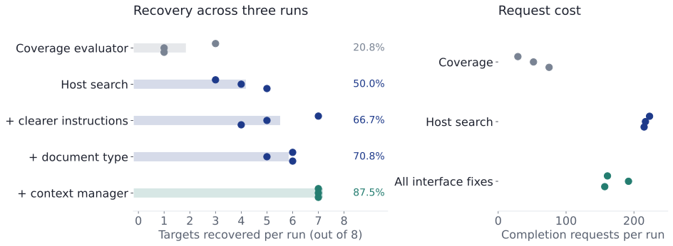
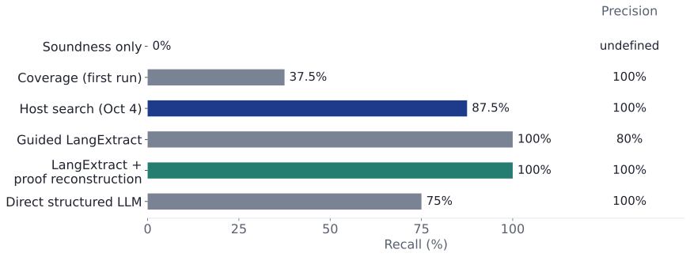
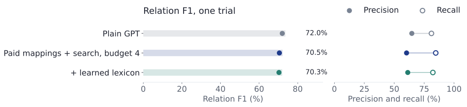

Research progress update
Checking whether extracted relations
follow from their sources
Dat Nguyen
August to November 2026
Research roadmap
Task and terms
Drug A does not inhibit Gene B in assay X.
<subject, predicate, object>
<Drug A, inhibits, Gene B>
This tuple is the relation. A claim adds polarity and context:
| Polarity | Positive or negative: here, NOT this relation. |
|---|---|
| Context / qualifier | A condition: assay = X. An assay is a laboratory test. |
| Evidence | The supporting quotation: the full sentence above. |
Claim: NOT <Drug A, inhibits, Gene B>, assay = X
Source support
A proof records how source evidence and declared interpretation rules justify a claim. Read this illustrative tree from top to bottom; hover or Tab to a node for details.
The problem
Drug A does not inhibit Gene B in assay X.
Suppose an extractor quotes this sentence exactly, but returns:
POSITIVE <Drug A, inhibits, Gene B>, assay = X
| Question | Result for this example |
|---|---|
| Does the quotation occur in the source? | Yes. Every quoted character matches. |
| Does the source support the claim? | No. “Does not inhibit” contradicts the positive claim. |
Source support means the claim follows from the cited text. Here, we must keep NOT, Drug A as subject, Gene B as object, and assay X.
A worked example
Drug A does not inhibit Gene B in assay X.
Supported: NOT <Drug A, inhibits, Gene B>, assay = X
| Change one part of the claim | Why the source does not support it |
|---|---|
| Replace NOT with POSITIVE | “Not” states the opposite polarity. |
| Swap Drug A and Gene B | Drug A is the subject; Gene B is the object. |
| Replace assay X with assay Y | The sentence only mentions assay X. |
| Remove the assay condition | A result in assay X does not establish an unrestricted claim. |
Each row changes only the indicated part; the quoted evidence stays identical. The checks must connect that evidence to every part of the claim.
October 5, 2026
Drug A does not inhibit Gene B in assay X.
A Context contains facts and operators. The assay X fact states a condition; the NOT operator negates the claim. negate returns a new Context containing both.
Context returned by negate and passed to E₁:
E₁ returns: NOT <Drug A, inhibits, Gene B>, assay = X
Program synthesis
An Extractor is a program like extract below, proposed by a large language model (LLM). A Context keeps the condition and polarity: here, assay X and NOT.
Actual implementation at 5c43bda
Illustrates extract_negative. The actual function takes a key (str), retrieves CertifiedDoc, and returns list[Relation]. Document and Claim are slide aliases. assay_scope combines assertion_ref, resolve_context_value and ContextScope; negate(doc, ...) abbreviates the assertion reference. The real example uses block/Gene C; the slide uses inhibit/Gene B with the same checks.
examples/negation_demo.py · extract_negative · lines 218-232
def extract_negative(key: str) -> list[Relation]:
doc = retrieve(key)
assertion = assertion_ref(doc)
assay = resolve_context_value(find_span(doc, "assay X"), ASSAY, ASSAY_X)
with ContextScope(assertion, (assay,)):
context = negate(assertion=assertion, cue=find_span(doc, "not"))
return [
make_relation(
find_span(doc, "Drug A"),
refine_relation(find_span(doc, "block"), "inhibits"),
find_span(doc, "Gene C"),
find_span(doc, "Drug A does not block Gene C in assay X."),
context=context,
)
]def extract(doc: Document) -> list[Claim]:
with assay_scope(doc, "assay X"):
context: Context = negate(doc, cue=find_span(doc, "not"))
return [make_relation(
find_span(doc, "Drug A"),
refine_relation(find_span(doc, "inhibit"), "inhibits"),
find_span(doc, "Gene B"),
find_span(doc, doc.text),
context=context,
)]extract(doc1) → [NOT <Drug A, inhibits, Gene B>, assay = X]
Conceptual Python: find_span retains each quote's location; refine_relation checks the declared verb form. assay_scope checks and attaches “assay X”; negate keeps it with “not.”
Running the program
Drug A does not inhibit Gene B in assay X.
Policy sets the rules and limits: preserve the source's roles, NOT and assay X; allow no text edits. Budget records edit use: this program has spent=0, limit=0.
| Proposed program | Checked result | Next step |
|---|---|---|
extract(doc1)Keeps NOT and assay X | Accepted: the negative claim, its proof, context and edit use | Synthesis returns the accepted function extract |
| A revised version Drops NOT | Refusal: the check fails because the source says “does not inhibit” | Give that reason to the model and request another program |
Failure means the search ends without an accepted program. For example, all 32 allowed model calls are used without a passing result.
Illustrative outcomes for the same sentence. Predicate refinement and source-backed negation use no text-edit budget.
The approach
A callable is a function: synthesis returns extract; calling extract(doc1) returns claims. Callable[[Document], list[Claim]] describes that input and output.
Actual implementation at 5c43bda
The real synthesis signature returns a callable validated by accept_candidate. propose represents the Skill-generated candidate; execute_and_check summarizes record/execute. Each execution installs a fresh KeepTrackHandler with corpus and policy. requests_remain summarizes the recorded_requests cap; Failure summarizes exhausted retries or request-limit exceptions. The real callable takes a key (str) and returns list[Relation]; the slide uses Document and Claim.
examples/checked_experiment.py · run_checked.accept_candidate · lines 298-300
def accept_candidate(run: RelationExtractorCallable) -> RelationExtractorCallable:
record(run, submitted=True)
return runexamples/checked_experiment.py · run_checked.synthesize_extractor · lines 302-334
@Skill.define
def synthesize_extractor(
source: str, instructions: str, evaluator: CoverageEvaluator
) -> Annotated[RelationExtractorCallable, AfterValidator(accept_candidate)]:
"""
Extract every unconditional atomic relation from {source}.
Task instructions: {instructions}
Return an extract(key: str) -> list[Relation] callable. Build it from the
operations in scope (retrieve, find_span, refine_relation, make_relation,
assertion_ref, resolve_context_value, ContextScope, current_context,
negate, add, delete, replace); read their docstrings with help() in
exec_code. Put all operation calls, including any ContextScope, inside
extract and pass its key to retrieve. Do not call the parser or read
corpus internals. Return [] if no unconditional relation is asserted.
Maximize the objective of this evaluator, which is in scope as
`evaluator`: {evaluator}
Score candidates with evaluator.evaluate(extract) in exec_code, and return
your best evaluated extractor.
This is one sentence. Specialize the extractor to the source argument;
no general sentence splitting or parser implementation is needed.
Retain every stated qualifier; missing context stays unknown. Negation must
concern the whole atomic assertion. Absence of evidence, hedges, and
unresolved scope cannot supply a negative claim. Evidence is the complete
sentence as one span. The predicate span contains only the lexical verb,
excluding auxiliaries and negation. Preserve argument order, polarity and
context. Acceptance executes the returned extractor with a fresh host
budget.
"""
raise NotHandledexamples/checked_experiment.py · run_checked.record · lines 288-296
def record(run: RelationExtractorCallable, *, submitted: bool) -> AnswerReport:
attempt, error = execute(
run, corpus=corpus, policy=policy, key=key, submitted=submitted
)
attempts.append(attempt)
if error is not None:
# The re-raised exception is how the Skill rejects the candidate.
raise error
return attempt.reportfrom collections.abc import Callable
type Extractor = Callable[[Document], list[Claim]]
def synthesize(source: Document, policy: Policy) -> Extractor | Failure:
feedback: Refusal | None = None
while requests_remain(policy):
program: Extractor = propose(source, policy.operations, feedback)
budget: Budget = fresh_budget(policy)
result: Accepted | Refusal = execute_and_check(program, source, policy, budget)
if isinstance(result, Accepted):
return program
feedback = result
return Failure()Soundness requires source support, so dropping “not” fails; an empty answer can pass. The check validates this execution on doc1.
September 28 to 29, 2026
An Edit records a text change. Here, add creates an AdditionEdit that appends a period after “Gene B.” A Span is a source slice; an EditedSpan retains that slice and its edit.
Example budget: 1 addition unit and 1 total edit unit per execution. Each addition costs 1.
Actual implementation at 5c43bda
Illustrative typed use of the real add operation inside an installed KeepTrackHandler. The host policy permits (Gene B, period, after), prices add at 1, and sets edit.add=1 and edit=1. add creates an AdditionEdit and returns EditedSpan only after charging both budgets. The first value is discarded here; the second call still exceeds the budget. Based on test_refused_charge_is_atomic_and_preserves_prior_spending.
keeptrack/ops.py · KeepTrackHandler._add · lines 367-391
@implements(add) # type: ignore[untyped-decorator]
def _add(
self,
span: Span,
anchor: str,
added: str,
*,
position: Literal["before", "after"] = "after",
occurrence: int | None = None,
) -> EditedSpan:
parent = self.admitted(span)
edit = AdditionEdit(
anchor=anchor,
added=added,
position=position,
occurrence=occurrence,
)
step = edit._validate(self.policy)
result = EditedSpan(parent=span, edit=edit, context=self._scope(span))
proof = evolve(
parent, rendered_surface=result.surface, chain=(*parent.chain, step)
)
self.spend("edit.add", self.policy.edit_costs.add)
self.proofs[id(result)] = (result, proof)
return resultkeeptrack/ops.py · KeepTrackHandler.spend · lines 222-237
def spend(self, key: str, cost: int) -> None:
charges = {key: cost}
if "edit" in self.policy.budgets:
charges["edit"] = cost
prospective = {
category: self.spent.get(category, 0) + charge
for category, charge in charges.items()
}
for category, used in prospective.items():
limit = self.policy.budgets.get(category, 0)
if used > limit:
raise ValidationProblem(
f"edit budget exceeded for {category}: {used}/{limit}",
stage="lexical",
)
self.spent.update(prospective)def add_period_twice(evidence: Span) -> EditedSpan:
first: EditedSpan = add(evidence, "Gene B", ".")
second: EditedSpan = add(evidence, "Gene B", ".")
return second| Operation | Example and outcome | Spent / limit |
|---|---|---|
| Normalization: approved equivalent predicate. | blocks → inhibits for Drug A/Gene B in assay X. The equivalence rule declares that meaning is preserved. In assay Y, keep blocks. | 0 / 1 |
| First addition | “Drug A blocks Gene B” → “Drug A blocks Gene B.” Returns an EditedSpan. | 1 / 1 |
| Second addition to the original source | Refusal: would spend 2 / 1; no value returned. | Still 1 / 1 |
Proofs retain source words and rules. Discarded edits still cost; each execution gets a fresh budget.
Recorded examples: empty answers
Drug A inhibits Gene B in assay X.
Expected: <Drug A, inhibits, Gene B>, positive, assay X. In the actual program, Relation represents a claim with its context; key identifies the source document.
Verbatim generated program
The slide shows its nested extract function, dedented. The complete submitted program below comes from runs.direct.requests[1].response.choices[0].message.tool_calls[0].function.arguments, decoded as JSON, then implementation.code. Escaped line breaks are rendered as newlines. Relation is the actual runtime claim type.
Recorded submission · direct · line 8927
from collections.abc import Callable
def synthesize_extractor(source: str, instructions: str) -> Callable[[str], list[Relation]]:
def extract(key: str) -> list[Relation]:
return []
return extractdef extract(key: str) -> list[Relation]:
return []| Source | Submitted extractor |
|---|---|
| The direct assertion above | Returns [] from its first submission. |
| Drug A blocks Gene B in assay Y. | Proposes “Gene B in assay Y” as the object; after rejection, the next extractor returns []. |
Both final reports pass with ok = True, zero relations and no errors. Both sentences still have a positive claim to extract: the checks accept an empty answer.
October 1, 2026
Drug A does not inhibit Gene B in assay X.
A provenance tree links a checked claim to the source words supporting it. Here, its leaves identify the subject, predicate, object, qualifier and negation cue. A token is one word: “Drug A” has two.
Coverage = (2 + 1 + 2 + 2 + 1) / 10 = 0.80
If only “assay X” is grounded as context, coverage is (2 × 0.5) / 10 = 0.10. With neither a relation nor grounded context, coverage is 0.
Selection rule in the BioRelFact search
P is a proposed extractor; d is one source sentence. C(P, d) is its checked word coverage, e.g., 7/8 for our positive Drug A/Gene B sentence. u(P, d) is the cost of permitted transformations of source-derived text, e.g., an addition charged 1 unit, or an undeclared predicate mapping charged 1 unit per word. B is a hard spending cap. 𝒫Accepted holds the attempts whose program ran and returned a decision the checker passed within B.
| Illustrative proposals | Eligible programs | Selected program |
|---|---|---|
| B = 0: no paid edits | P₁ only | P₁: coverage 0.60 |
| B = 1: allow one cost unit | P₁ and P₂ | P₂: coverage 0.80 |
The BioRelFact search ranks each passing attempt by covered words, then by fewer edits, with a fresh budget of B units per attempt (PR #22; the budget flag in PR #27). The recorded runs use B = 2, 4 and 8 on 65 pairs and B = 4 and 8 on all 1,767 pairs. The table is illustrative.
Experiment settings · Dataset and inclusion criteria
We authored controlled contrasts: change the verb, polarity, roles or assay to test what must stay supported. The declared synonym rule equates blocks with inhibits only for a Drug subject and Gene object in assay X.
| Source sentence | Selection criterion / expected answer |
|---|---|
| Drug A inhibits Gene B in assay X. | Direct assertion: extract the positive claim. |
| Drug A blocks Gene B in assay X. | Synonym: either supported verb gets credit. |
| Drug A does not block Gene C in assay X. | Negation: preserve NOT and Gene C. |
| Drug A does not block Gene B in assay X. | Conflicting sources: this claim stays negative even though another source is positive. |
| Drug A never inhibits Gene B in assay X. | Another negative form: preserve NOT. The revised sentence-pattern rules added support for “never.” |
The first September 14 notebook had seven sources. Later that day it added reversed roles, “may” and “never,” giving ten. These five sources each have one target meaning.
Experiment settings · Dataset and inclusion criteria
Abstention means returning no claim, []. A failed synonym condition still permits the original blocks relation when the source asserts it.
| Source sentence | Selection criterion / expected answer |
|---|---|
| There is no evidence that Drug A blocks Gene D in assay X. | Absence of evidence supports neither polarity: return []. |
| Drug A may inhibit Gene B in assay X. | Possibility is not an unconditional claim: return []. |
| Truck T blocks Road R in assay X. | Entity types: keep blocks; the synonym rule is for Drug/Gene. |
| Gene B blocks Drug A in assay X. | Argument roles: keep Gene B as subject and blocks as predicate. |
| Drug A blocks Gene B in assay Y. | Assay context: keep blocks and assay Y; the rule requires X. |
Together: eight target meanings and two expected empty answers. The grammar (allowed sentence patterns), entity types and synonym rule are supplied premises. This is not a held-out biomedical benchmark.
Experiment settings · Scoring
A reference is an independently authored correct claim. Approved blocks/inhibits spellings recover the same target once. Labels are kept outside the model-facing synthesis module.
| Complete match | Our negative relation, assay X, doc1 and its full quotation all agree. |
|---|---|
| Precision | Correct / returned: e.g., 6 correct of 6 returned = 100%. |
| Recall | Recovered / references: e.g., 6 recovered of 8 targets = 75%. |
| Exact document | The whole answer agrees: e.g., the one complete claim for doc1, with no extras. |
A baseline is a comparison method, here the LangExtract LLM extraction library. “Guided” supplies rules and examples such as our blocks/inhibits rewrite. “+ proof reconstruction” adds a Keep Track adapter that checks its proposals, for example refusing a dropped “not,” and constructs proofs for those that pass.
October 4, 2026

with install the qualifier scope. All listed runs emit zero incorrect relations. These sequential runs do not isolate each change's effect.Baseline: LangExtract + proof reconstruction
Drug A blocks Gene B in assay X.
LangExtract is an LLM extraction library and a comparison method here. Proof reconstruction takes its proposed fields and checks their support using Keep Track’s rules, e.g., whether “blocks” permits “inhibits.”
A wrong role, unsupported synonym, missing qualifier or polarity mismatch prevents proof reconstruction. The same Keep Track checks also apply to synthesized extractors.
October 4, 2026
“Direct structured LLM” asks for fixed fields, e.g., {subject: "Drug A", predicate: "inhibits", ...}, without generating an extractor. These October runs use gpt-5.4-mini.

Keep Track checks LangExtract's proposed claims and produces proofs for those that pass. Synthesis additionally produces an executable extractor and supports revision from refusals; these results do not establish a quality advantage over the fully checked baseline.
Experiment settings · BioRelFact
The frozen development pairs the pilot studies used. Subject and object mentions highlighted; gold label, facticity and case id after each sentence.
“The review of the literature further revealed that later ages at onset and the presence of cerebellar ataxia are the main characteristics of patients carrying the DNMT1 p.Y511H as compared with those carrying DNMT1 p.Y511C.” GENEVARIANT : DISEASE/PHENOTYPE - ASSOCIATION · fact · EMBASE:L2010158947:663:886:17:31
“We have analyzed, in a group of ESRD patients and matched controls, a set of SNPs of genes (Klotho rs577912, rs564481, rs9536314; FGF23 rs7955866; IGF1 rs35767; TNFA rs1800629; IL6 rs1800795; MIF rs755622, rs1007888) chosen in relation to their possible involvement with renal disease and concomitant pathologies.” GENEVARIANT : DISEASE/PHENOTYPE - ASSOCIATION · possible · EMBASE:L2015580739:347:660:12:25
“We have analyzed, in a group of ESRD patients and matched controls, a set of SNPs of genes (Klotho rs577912, rs564481, rs9536314; FGF23 rs7955866; IGF1 rs35767; TNFA rs1800629; IL6 rs1800795; MIF rs755622, rs1007888) chosen in relation to their possible involvement with renal disease and concomitant pathologies.” GENEVARIANT : DISEASE/PHENOTYPE - ASSOCIATION · possible · EMBASE:L2015580739:347:660:16:21
“We have analyzed, in a group of ESRD patients and matched controls, a set of SNPs of genes (Klotho rs577912, rs564481, rs9536314; FGF23 rs7955866; IGF1 rs35767; TNFA rs1800629; IL6 rs1800795; MIF rs755622, rs1007888) chosen in relation to their possible involvement with renal disease and concomitant pathologies.” GENEVARIANT : DISEASE/PHENOTYPE - ASSOCIATION · possible · EMBASE:L2015580739:347:660:17:25
“Results: Our results indicate that carrying T allele in both rs7597593 and rs10761482 is associated with Schizophrenia (rs10761482: p-value<inf>Chi-square</inf> = 0.007, OR<inf>(SCZ/control)</inf> = 1.943195/ rs7597593: p-value<inf>Chi-squared</inf> = 5.736 × 10<sup>−9</sup>, OR<inf>(SCZ/control)</inf> = 4.088313) and increases the risk of schizophrenia incidence in Iranian population (p-value<inf>rs759793</inf> = 1.80 × 10<sup>−11</sup>, p-value<inf>rs10761482</inf> = 6.09 × 10<sup>−5</sup>).” GENEVARIANT : DISEASE/PHENOTYPE - ASSOCIATION · fact · EMBASE:L2016491593:864:1362:19:25
“Using the sequence information of the NGS-based IG clonality analysis, multiple related subclones could be distinguished in the PAX5 P80R-mutated B-ALL.” GENEVARIANT : DISEASE/PHENOTYPE - ASSOCIATION · fact · EMBASE:L2019595956:521:673:2:3
“The haplotype analysis revealed an association between the ACTATGG haplotype and higher risk of asthma for the rs1544410, rs7975232, rs731236, rs4646536, rs703842, rs3782130 and rs10877012 genetic polymorphisms (p = 0.039).” GENEVARIANT : DISEASE/PHENOTYPE - ASSOCIATION · fact · EMBASE:L2021764793:1168:1391:5:12
“Conclusions: KRAS G12D inhibition reprogrammed the TIME in pancreatic cancer experimental models, reversed tumor growth, increased CD8<sup>+</sup> T cell infiltration, decreased myeloid infiltration and elicited sustained tumor regression in response to MRTX1133 combined with immune checkpoint inhibitors.” GENEVARIANT : DISEASE/PHENOTYPE - ASSOCIATION · fact · EMBASE:L2029407179:2481:2787:62:79
“Cytomegalovirus (CMV) infection was more common in patients transplanted with TIM-3 rs10515746 mismatched donors (p = 0.0229) and this association was also found to be independent of HLA incompatibility and pre-transplant CMV-IgG status.” GENEVARIANT : DISEASE/PHENOTYPE - ASSOCIATION · fact · EMBASE:L2033279169:1454:1691:4:6
“Seven SNPs were associated with lower risk of moderate to severe xerostomia, of which only one mapped to specific genomic region (15q21.3, rs4776140, MA = G, LOC105370826, a ncRNA class RNA gene, P = 1.5 × 10-5).” GENEVARIANT : DISEASE/PHENOTYPE - ASSOCIATION · fact · EMBASE:L637848562:1055:1267:29:32
“Our GWAS identified eight SNPs suggestively associated with higher risk of moderate to severe xerostomia in six genomic regions (2p13.3, rs6546481, Minor Allele (MA) = A, ANTXR1, P = 4.3 × 10-7; 5p13.2-p13.1, rs16903936, MA = G, EGFLAM, P = 5.1 × 10-6; 4q21.1, rs10518156, MA = G, SHROOM3, P = 7.1 × 10-6; 19q13.42, rs11882068, MA = G, NLRP9, P = 1.7 × 10-5; 12q24.33, rs4760542, MA = G, GLT1D1, P = 1.8 × 10-5; and 3q27.3, rs11714564, MA = G, RTP1, P = 2.9 × 10-5.” GENEVARIANT : DISEASE/PHENOTYPE - ASSOCIATION · fact · EMBASE:L637848562:589:1054:24:31
“Of these, five missense variants were seen in cases of demyelinating diseases but not in healthy controls: STAM2 (c.259C>T, p.Arg87Cys), CHMP4C (c.455G>A, p.Arg152Gln), TSG101 (c.501G>A, p.Met167Ile), VPS4A (c.1171G>A, p.Asp391Asn), IST1 (c.505G>A, p.Ala169Thr; c.22G>A, p.Ala8Thr; c.466G>A, p.Ala156Thr).” GENEVARIANT : DISEASE/PHENOTYPE - ASSOCIATION · fact · EMBASE:L641754789:1483:1809:33:42
“In a previously reported case of autoimmune hemolytic anemia (AIHA) with TKS, we observed that AIHA initially resolved with prednisolone, but gradually became refractory to drug therapy.” DRUG : DISEASE - THERAPEUTIC_USE · fact · EMBASE:L2020407718:397:583:0:2
“Purpose: We compared the clinical effects of Neurotropin, limaprost alfadex, and a combination of both drugs for lumbar spinal stenosis (LSS) with low back pain (LBP).” DRUG : DISEASE - THERAPEUTIC_USE · uncommitted · EMBASE:L2021063807:0:167:0:5
“Purpose: We compared the clinical effects of Neurotropin, limaprost alfadex, and a combination of both drugs for lumbar spinal stenosis (LSS) with low back pain (LBP).” DRUG : DISEASE - THERAPEUTIC_USE · fact · EMBASE:L2021063807:0:167:3:6
“Participants were patients diagnosed with LSS by MRI and were randomly assigned to three groups: Neurotropin/limaprost combination (NL group), Neurotropin (N group), and limaprost group (L group).” DRUG : DISEASE - THERAPEUTIC_USE · uncommitted · EMBASE:L2021063807:282:478:1:7
“This interventional study aimed to assess efficacy and safety of perampanel as an early add-on treatment of focal-onset seizures (FOS) with or without focal-to-bilateral tonic–clonic seizures (FBTCS) in Chinese patients.” DRUG : DISEASE - THERAPEUTIC_USE · uncommitted · EMBASE:L2025410597:226:446:4:8
“Background: Vedolizumab is a gut-selective anti-lymphocyte trafficking agent approved for the treatment of moderate to severely active inflammatory bowel disease (IBD: ulcerative colitis [UC] and Crohn's disease [CD]).” DRUG : DISEASE - THERAPEUTIC_USE · fact · EMBASE:L2031903688:0:218:1:5
“Recent analyses of subpopulations within large pooled datasets have characterized the clinical benefit for progression-free survival and overall survival for ixabepilone in special populations, such as patients with triple-negative breast cancer or those who relapsed within 12 months of prior treatment.” DRUG : DISEASE - THERAPEUTIC_USE · fact · EMBASE:L635534563:816:1120:2:4
“Isometric tension recordings for roflumilast and tadalafil, PDE4 and PDE5 inhibitors, respectively, electrical field stimulation (EFS) and β-adrenoceptor agonist isoproterenol and endogenous H<inf>2</inf>S production measurement.” DRUG : GENE - ANTAGONIST · fact · EMBASE:L2017030624:735:964:0:13
“Rat models of glucocorticoid-induced ANFH with AS-IV intervention were established, and osteogenesis, angiogenesis, apoptosis and oxidative stress were evaluated before and after blocking the PI3K/Akt pathway with LY294002.” DRUG : GENE - ANTAGONIST · fact · EMBASE:L2022855559:372:595:0:1
“Rat models of glucocorticoid-induced ANFH with AS-IV intervention were established, and osteogenesis, angiogenesis, apoptosis and oxidative stress were evaluated before and after blocking the PI3K/Akt pathway with LY294002.” DRUG : GENE - ANTAGONIST · fact · EMBASE:L2022855559:372:595:0:2
“After completing four cycles of intravenous infliximab, a tumor necrosis factor (TNF) inhibitor, her vaginal and perianal discharge resolved completely.” DRUG : GENE - ANTAGONIST · fact · EMBASE:L636172116:3342:3494:0:2
“Accumulating evidence suggests that insulin deficiency is a risk factor for Alzheimer’s disease (AD); however, the underlying molecular mechanisms are not completely understood.” GENE : DISEASE - MODULATES · fact · EMBASE:L2017878452:0:177:5:7
“Overall, this work shows hypothalamic ataxin-2 as a new player in metabolism regulation, which might contribute to the development of new strategies for metabolic disorders.” GENE : DISEASE - MODULATES · fact · EMBASE:L2018799259:1454:1627:12:15
“Treating craniosynostosis mice with Yoda1, a small molecule agonist for Piezo1, reduces intracranial pressure and improves CSF flow, in addition to restoring meningeal lymphangiogenesis, drainage to the deep cervical lymph nodes, and brain-CSF perfusion.” GENE : DISEASE - MODULATES · fact · EMBASE:L2027952435:771:1025:9:12
“The development of novel 5-HT2C agonists for weight loss represents a potentially important approach for addressing antipsychotic-associated weight gain.” GENE : DISEASE - MODULATES · fact · EMBASE:L639855122:3622:3775:5:7
“Reciprocal cross-sensitization between cocaine and RU 24969 was evident in preweanling rats, whereas methamphetamine and RU 24969 did not cross-sensitize.” DRUG : DISEASE - CAUSAL_EFFECT · fact · EMBASE:L2014287569:964:1118:0:6
“Similar adverse event profiles of constipation, nausea, vomiting, and dizziness were observed between methadone and prior opioid regimens.” DRUG : DISEASE - CAUSAL_EFFECT · fact · EMBASE:L2019940774:1213:1351:3:4
“Objectives Elexacaftor-tezacaftor-ivacaftor (ETI), a triple CFTR modulator combination, has proven to be highly effective in patients with cystic fibrosis (CF) carrying at least one Phe508del mutation.” DRUG : GENE - MODULATES · fact · EMBASE:L2025006436:0:201:1:2
“In the ARETHUSA clinical trial (NCT03519412), we revealed that treatment with temozolomide (TMZ) can pharmacologically deactivate the MMR machinery, as indicated by mutational signature analysis and the emergence of MMR gene mutations.” DRUG : GENE - MODULATES · fact · EMBASE:L643159859:312:547:1:4
“It was revealed that in children with a reduced level of CD3+ CD71+ and an increased level of CD3+ CD95+ in blood serum at the age of 3 months, frequent acute respiratory infections occurred in the first year of life.” GENE : DISEASE - BIOMARKER · fact · EMBASE:L2028758972:1338:1555:2:4
“Conclusion: Serum KIM-1 and TNFR1 were associated with higher values for Vv (Mes/glom), GBM, and tubular atrophy in persons with T1DM and normal kidney function, suggesting relevance as markers of early DN structural changes prior to UAE elevation or GFR decline.” GENE : DISEASE - BIOMARKER · fact · EMBASE:L641933951:1078:1341:15:19
“Further investigation of the interactions of platelets, with inflammatory cytokines and endothelial biomarkers, may help us to better understand the disease, and to recognize those patients at risk of bleeding, or conversely thrombosis.” GENE : DISEASE - CAUSAL_EFFECT · fact · EMBASE:L2014355296:294:530:9:11
“Mutant Galnt2 homozygote (Galnt2 <sup>tm1Lat/tm1Lat</sup>) mimics human otitis media in comparable pathology and causes hearing loss.” GENE : DISEASE - CAUSAL_EFFECT · fact · EMBASE:L2021905593:81:214:7:9
“Though studies have also shown imeglimin to significantly improve insulin secretion and decrease β-cell death, whether its physiologic effects are purely insulin dependent remains unclear.” DRUG : GENE - AGONIST · fact · EMBASE:L2007463126:707:895:4:5
“When considered alongside its benign safety profile reported in patients with chronic kidney disease, imeglimin shows true promise to provide a novel mechanism for T2DM treatment, with potential application in a larger, more comprehensive patient population.” NO_RELATION · EMBASE:L2007463126:1397:1655:0:1
“However, rs4702-A was associated with increased expression of FURIN and BDNF in the serum and PBMC of glioma patients after radiotherapy.” NO_RELATION · EMBASE:L2014563788:584:721:4:7
“Patients (N = 3621) on maximally tolerated statins were randomized 2:1 to oral bempedoic acid 180 mg or placebo once daily for 12 to 52 weeks with the results analysed by baseline glycaemic status (diabetes, prediabetes, or normoglycaemia).” NO_RELATION · EMBASE:L2014923282:312:552:0:3
“Starting with some preliminary indications that emerged from the analysis of online databases that suggested a possible overexpression of KCTD15 in breast cancer, in this study, we evaluated the expression levels of the protein in breast cancer cell lines and in patients and the effects of its silencing in the HER2+ cell model.” NO_RELATION · EMBASE:L2015838383:305:634:13:14
“Significance: These results indicate that PDE4A is mainly expressed within the nerves cells of the rat CC, where roflumilast induces a potent corpus cavernous relaxation per se and potentiates the response induced by β-adrenoceptor activation.” NO_RELATION · EMBASE:L2017030624:1372:1615:3:10
“Isometric tension recordings for roflumilast and tadalafil, PDE4 and PDE5 inhibitors, respectively, electrical field stimulation (EFS) and β-adrenoceptor agonist isoproterenol and endogenous H<inf>2</inf>S production measurement.” NO_RELATION · EMBASE:L2017030624:735:964:0:11
“Background: Plasma ceramides and sphingomyelins have been independently linked to diabetes risk, glucose and insulin levels, and the risk of several cardiovascular (CVD) outcomes.” NO_RELATION · EMBASE:L2018857856:0:179:1:3
“Survival analyses revealed a significant correlation between high expression of C1R, CCL2, and TNFRSF1A in the coronavirus disease-COVID-19 pathway and the poor survival in GBM patients.” NO_RELATION · EMBASE:L2019017187:528:714:10:24
“The approval of Onpattro, a lipid-based siRNA therapeutic, and the proven clinical success of two lipid-based COVID-19 vaccines from Pfizer-BioNTech, and Moderna heralded the specific advantages of lipid-based systems among all other synthetic nucleic acid carriers.” NO_RELATION · EMBASE:L2019384472:237:503:0:3
“In this study, we aimed to investigate the roles of tumor cell-derived CCL2 on trastuzumab resistance and overcome the resistance by treatment with the anti-CD40-scFv-linked anti-HER2 (CD40 ×HER2) bispecific antibody (bsAb).” NO_RELATION · EMBASE:L2019469400:184:408:2:5
“On exposure to CCL2, TAMs decreased the M1-like phenotype, thereby eliciting the trastuzumab resistance.” NO_RELATION · EMBASE:L2019469400:982:1086:17:18
“By establishing an animal model, we found decreased miR-199a-5p expression and increased HIF-1α expression in OSAS with hypertension.” NO_RELATION · EMBASE:L2019671577:958:1091:5:7
“The nomogram identified the rs17276588 variant genotype and several clinical parameters, including age, diabetes mellitus, body mass index (BMI), hypertension, history of alcohol use, history of smoking, and hyperlipidemia as risk factors for developing IS.” NO_RELATION · EMBASE:L2020582813:1338:1595:3:8
“In a number of malignancies, including gastric cancer, esophageal squamous cell carcinoma, breast cancer, and prostatic cancer, miR-22 is aberrantly expressed either up or down.” NO_RELATION · EMBASE:L2022161454:770:947:0:4
“Conclusion: We demonstrate that the DNA methylation of Runx3 plays a critical role in CD8+ T-cell infiltration and differentiation during decitabine-primed PD-1-ab immunotherapy, which provides a supporting mechanism for the essential role of epiregulation in immunotherapy.” NO_RELATION · EMBASE:L2023238497:2195:2469:5:9
“Conclusion: EBUS can reliably obtain samples for detection of PDL1 testing in NSCLC and a positive trend has been observed in our service over the last five years with 100% success rate of PD-L1 testing in 2020 and 2021. Disclosure: No significant relationships.” NO_RELATION · EMBASE:L2023808923:1273:1535:9:11
“The samples containing more than 100 tumour cells were analysed using antibody PDL1 IHC 22C3 pharmDx (Agilent, Dako) and results were presented as percentage of tumour cells expressing PD-L1.” NO_RELATION · EMBASE:L2023808923:787:978:6:10
“Species and genotyping data from Burkholderia isolates received in 2021 and 2022 were compared with data from Burkholderia isolates received between 2015 and 2019, the 5-year period before the COVID-19 pandemic and approval of elexacaftor-tezacaftor-ivacaftor.” NO_RELATION · EMBASE:L2027771498:1346:1606:1:3
“Background: The ARROW study demonstrated favorable clinical efficacy and safety of pralsetinib (PRL) in treating rearranged during transfection (RET) fusion positive non-small cell lung cancer (NSCLC) in clinical trials.” NO_RELATION · EMBASE:L2027807039:0:220:0:3
“Further, craniosynostosis exacerbates amyloid pathology and plaque buildup in Twist1<sup>+/-</sup>:5xFAD transgenic Alzheimer’s disease models.” NO_RELATION · EMBASE:L2027952435:627:770:8:11
“The direct effects of APC on cofactor activity of NXT007 or FVIIIa in a FXa generation assay were also measured.” NO_RELATION · EMBASE:L2029073576:643:755:4:5
“Four patients had hepatic or renal findings: deranged liver function tests (p.Gly292fs, HNF1A); hepatic enlargement (p.Arg311Cys, HNF4A); renal hypoplasia (p.Arg159Gln, HNF1A); liver cysts (p.Arg63Trp, HNF4A).” NO_RELATION · EMBASE:L637188167:1576:1785:28:40
“In contrast, inflammatory pathway gene sets (Inflammatory response, IFNγ response, IL2/STAT5) were enriched in MRD+ pts in the Ven-Obi arm, suggesting their role in Ven resistance.” NO_RELATION · EMBASE:L638939930:2536:2716:6:10
“Classified as an interstitial lung disease, it can be secondary to infection, drug toxicity, connective tissue disorders, inhalation injuries (cocaine), organ transplant, or radiotherapy, and also can be idiopathic.” NO_RELATION · EMBASE:L640266223:170:385:0:1
“Classified as an interstitial lung disease, it can be secondary to infection, drug toxicity, connective tissue disorders, inhalation injuries (cocaine), organ transplant, or radiotherapy, and also can be idiopathic.” NO_RELATION · EMBASE:L640266223:170:385:0:3
“Objective responses (1 CR, 14 PRs) were achieved in 15/54 (27.8%) efficacy-evaluable pts, including 10/17 low-grade serous ovarian cancer (LGSOC) (58.8%; median exposure ∼23 mo), 2 NSCLC (1 NRAS Q61K, 1 BRAF-V600E), 2 endometrial cancer (1 BRAF ZC3HAv1 fusion, 1 KRAS G12A), and 1 LG serous adenocarcinoma of Mullerian origin (KRAS G12V).” NO_RELATION · EMBASE:L641474594:848:1186:11:14
“Objective responses (1 CR, 14 PRs) were achieved in 15/54 (27.8%) efficacy-evaluable pts, including 10/17 low-grade serous ovarian cancer (LGSOC) (58.8%; median exposure ∼23 mo), 2 NSCLC (1 NRAS Q61K, 1 BRAF-V600E), 2 endometrial cancer (1 BRAF ZC3HAv1 fusion, 1 KRAS G12A), and 1 LG serous adenocarcinoma of Mullerian origin (KRAS G12V).” NO_RELATION · EMBASE:L641474594:848:1186:13:14
“As we hypothesized that cytokine storm induced kidney injury in COVID-19, MA10-infected mice were treated with anti-IL-6R mAb or Baricitinib.” NO_RELATION · EMBASE:L642703453:1772:1913:2:7
“The serious cases of COVID-19 are treated with blockade of IL-6/JAK signaling, such as anti-IL-6 receptor antibody (anti-IL-6R mAb) and JAK inhibitor Baricitinib.” NO_RELATION · EMBASE:L642703453:206:368:1:6
| Gold label | Pairs |
|---|---|
| GENEVARIANT : DISEASE/PHENOTYPE - ASSOCIATION “The review of the literature further revealed that later ages at onset and the presence of cerebellar ataxia are the main characteristics of patients carrying the DNMT1 p.Y511H as compared with those carrying DNMT1 p.Y511C.” GENEVARIANT : DISEASE/PHENOTYPE - ASSOCIATION · fact · EMBASE:L2010158947:663:886:17:31 | 12 |
| DRUG : DISEASE - THERAPEUTIC_USE “Recent analyses of subpopulations within large pooled datasets have characterized the clinical benefit for progression-free survival and overall survival for ixabepilone in special populations, such as patients with triple-negative breast cancer or those who relapsed within 12 months of prior treatment.” DRUG : DISEASE - THERAPEUTIC_USE · fact · EMBASE:L635534563:816:1120:2:4 | 7 |
| Seven other relations DRUG : GENE - ANTAGONIST · 4 “Isometric tension recordings for roflumilast and tadalafil, PDE4 and PDE5 inhibitors, respectively, electrical field stimulation (EFS) and β-adrenoceptor agonist isoproterenol and endogenous H<inf>2</inf>S production measurement.” fact · EMBASE:L2017030624:735:964:0:13 GENE : DISEASE - MODULATES · 4 “Accumulating evidence suggests that insulin deficiency is a risk factor for Alzheimer’s disease (AD); however, the underlying molecular mechanisms are not completely understood.” fact · EMBASE:L2017878452:0:177:5:7 DRUG : DISEASE - CAUSAL_EFFECT · 2 “Reciprocal cross-sensitization between cocaine and RU 24969 was evident in preweanling rats, whereas methamphetamine and RU 24969 did not cross-sensitize.” fact · EMBASE:L2014287569:964:1118:0:6 DRUG : GENE - MODULATES · 2 “Objectives Elexacaftor-tezacaftor-ivacaftor (ETI), a triple CFTR modulator combination, has proven to be highly effective in patients with cystic fibrosis (CF) carrying at least one Phe508del mutation.” fact · EMBASE:L2025006436:0:201:1:2 GENE : DISEASE - BIOMARKER · 2 “It was revealed that in children with a reduced level of CD3+ CD71+ and an increased level of CD3+ CD95+ in blood serum at the age of 3 months, frequent acute respiratory infections occurred in the first year of life.” fact · EMBASE:L2028758972:1338:1555:2:4 GENE : DISEASE - CAUSAL_EFFECT · 2 “Further investigation of the interactions of platelets, with inflammatory cytokines and endothelial biomarkers, may help us to better understand the disease, and to recognize those patients at risk of bleeding, or conversely thrombosis.” fact · EMBASE:L2014355296:294:530:9:11 DRUG : GENE - AGONIST · 1 “Though studies have also shown imeglimin to significantly improve insulin secretion and decrease β-cell death, whether its physiologic effects are purely insulin dependent remains unclear.” fact · EMBASE:L2007463126:707:895:4:5 | 17 |
| NO_RELATION “When considered alongside its benign safety profile reported in patients with chronic kidney disease, imeglimin shows true promise to provide a novel mechanism for T2DM treatment, with potential application in a larger, more comprehensive patient population.” NO_RELATION · EMBASE:L2007463126:1397:1655:0:1 | 29 |
“…characterized the clinical benefit for progression-free survival and overall survival for ixabepilone in special populations, such as patients with triple-negative breast cancer…”
Each pair gives a sentence, two marked mentions and their types. The label is one of nine relations or NO_RELATION; here it is DRUG : DISEASE - THERAPEUTIC_USE.
Relation F1 is micro F1 over the nine relations, with all 36 gold positives in the denominator. Every method runs three gpt-5.4-mini trials on the same pairs.
Method change
Selected program for ixabepilone, trial 1 (verbatim)
def propose_program(public_input: str, instructions: str, current_code: str, feedback: str) -> PairProgram:
def extract(case: PairInput) -> PairAnswer:
sentence_span: Span = span_at(case.case_id, 0, 0, len(case.sentence))
subject: Span = span_at(case.case_id, 0, case.head_range[0], case.head_range[1])
object_: Span = span_at(case.case_id, 0, case.tail_range[0], case.tail_range[1])
predicate_source: Span = find_span(retrieve(case.case_id), "clinical benefit")
predicate: RefinedSpan = refine_relation(predicate_source, "DRUG : DISEASE - THERAPEUTIC_USE")
return make_relation(subject, predicate, object_, sentence_span, commitment="affirmed")
return extractIxabepilone, previously rejected, is now accepted at 2 of 2 units:
'clinical benefit' -> 'DRUG : DISEASE - THERAPEUTIC_USE'; undeclared mapping; cost=2Why LangExtract has higher precision
LangExtract has higher precision (56.3% vs our 51.8%) because it answers each pair once. Our first accepted program reads sentences about as well as LangExtract. We lose precision when coverage search keeps looking after that.
| Per trial (1 / 2 / 3) | Positives predicted | Positives on 29 negatives | Correct |
|---|---|---|---|
| LangExtract | 48 / 47 / 49 | 17 / 17 / 19 | 27 / 27 / 27 |
| Ours, first accepted program | 48 / 49 / 48 | 19 / 18 / 17 | 25 / 27 / 27 |
| Ours, after coverage search | 54 / 57 / 57 | 21 / 23 / 23 | 28 / 29 / 30 |
The search accounts for 2.7 of the 4.5 points. LangExtract kept 5, 8 and 4 pairs negative where our selection is positive; in 4, 5 and 3 of them our agent had proposed NO_RELATION itself.
Failure cases · false positives
Each trial selects a positive for 21 to 23 of the 29 NO_RELATION pairs. Agent tried maximizing coverage and dropped NO_RELATION.
Row 1: Baricitinib and IL-6R, trial 1, selected attempt 3 (verbatim)
def propose_program(public_input: str, instructions: str, current_code: str, feedback: str) -> PairProgram:
def extract(case: PairInput) -> PairAnswer:
subject: Span = span_at(case.case_id, 0, *case.head_range)
object_: Span = span_at(case.case_id, 0, *case.tail_range)
evidence: Span = span_at(case.case_id, 0, 0, len(case.sentence))
predicate_source: Span = find_span(retrieve(case.case_id), "JAK inhibitor")
predicate: RefinedSpan = refine_relation(predicate_source, "DRUG : GENE - ANTAGONIST")
return make_relation(subject, predicate, object_, evidence, commitment="affirmed")
return extractRow 2: p.Gly292fs and renal hypoplasia, trial 1, selected attempt 2 (verbatim)
def propose_program(public_input: str, instructions: str, current_code: str, feedback: str) -> PairProgram:
def extract(case: PairInput) -> PairAnswer:
subject: Span = span_at(case.case_id, 0, *case.head_range)
obj: Span = span_at(case.case_id, 0, *case.tail_range)
evidence: Span = span_at(case.case_id, 0, 0, len(case.sentence))
predicate_source: Span = find_span(retrieve(case.case_id), "p.Gly292fs")
predicate: RefinedSpan = refine_relation(predicate_source, "GENEVARIANT : DISEASE/PHENOTYPE - ASSOCIATION")
return make_relation(subject, predicate, obj, evidence, commitment="affirmed")
return extractFull records, with every attempt and checker report: row 1 and row 2.
| Failure and example | Why it is wrong |
|---|---|
1. The cue belongs to another entity. “…anti-IL-6 receptor antibody (anti-IL-6R mAb) and JAK inhibitor Baricitinib.” Selected relation: <Baricitinib, “JAK inhibitor” → ANTAGONIST, IL-6R>Subjectspan_at source[150:161]: 'Baricitinib'type biorelfact:Drug, concept DR:BAYPHTH0009753, both suppliedPredicatespan_at source[136:149]: 'JAK inhibitor'refine_relation 'JAK inhibitor' -> 'DRUG : GENE - ANTAGONIST'; undeclared mapping; cost=2Objectspan_at source[121:126]: 'IL-6R'type biorelfact:Gene, concept GH:BAYPHTH3570, both suppliedEvidencespan_at source[0:162]: '…'the whole sentencemake_relation, commitment="affirmed" · lexical passed, schema passed, ontology not run · signature biorelfact:Drug → biorelfact:Gene · edit budget 2/2Selected decisionDRUG : GENE - ANTAGONIST, factuality: factGold: NO_RELATION · Trial 1, selected attempt 3 | “JAK inhibitor” says Baricitinib inhibits JAK. IL-6R belongs to the antibody. All six accepted programs agreed. |
2. An entity name is the cue. “…deranged liver function tests (p.Gly292fs, HNF1A); hepatic enlargement (p.Arg311Cys, HNF4A); renal hypoplasia (p.Arg159Gln, HNF1A)…” Selected relation: <p.Gly292fs, “p.Gly292fs” → ASSOCIATION, renal hypoplasia>Subjectspan_at source[76:86]: 'p.Gly292fs'type biorelfact:GeneVariant, concept MU:PG292FS, both suppliedPredicatespan_at source[76:86]: 'p.Gly292fs'refine_relation 'p.Gly292fs' -> 'GENEVARIANT : DISEASE/PHENOTYPE - ASSOCIATION'; undeclared mapping; cost=1Objectspan_at source[138:154]: 'renal hypoplasia'type biorelfact:Disease, concept SD:BAYPHTH015975, both suppliedEvidencespan_at source[0:209]: '…'the whole sentencemake_relation, commitment="affirmed" · lexical passed, schema passed, ontology not run · signature biorelfact:GeneVariant → biorelfact:Disease · edit budget 1/2Selected decisionGENEVARIANT : DISEASE/PHENOTYPE - ASSOCIATION, factuality: factGold: NO_RELATION · Trial 1, selected attempt 2 | The list pairs p.Gly292fs with liver function tests; renal hypoplasia goes with p.Arg159Gln. All seven accepted programs agreed. |
3. Coverage replaces NO_RELATION. Insulin and diabetes: six programs say NO_RELATION; the selected one returns <insulin, “linked to” → CAUSAL_EFFECT, diabetes>Subjectspan_at source[109:116]: 'insulin'type biorelfact:Drug, concept DR:BAYPHTH0000084, both suppliedPredicatespan_at source[72:81]: 'linked to'refine_relation 'linked to' -> 'DRUG : DISEASE - CAUSAL_EFFECT'; undeclared mapping; cost=2Objectspan_at source[82:90]: 'diabetes'type biorelfact:Disease, concept SD:BAYPHTH010844, both suppliedEvidencespan_at source[0:179]: '…'the whole sentencemake_relation, commitment="affirmed" · lexical passed, schema passed, ontology not run · signature biorelfact:Drug → biorelfact:Disease · edit budget 2/2Selected decisionDRUG : DISEASE - CAUSAL_EFFECT, factuality: factGold: NO_RELATION · Trial 2, selected attempt 7. | The positive covers 4 words and NO_RELATION covers none, so the positive wins. |
Failure case · trial 2
“Plasma ceramides and sphingomyelins have been independently linked to diabetes risk, glucose and insulin levels, and the risk of several cardiovascular (CVD) outcomes.”
Gold and LangExtract: NO_RELATION. “linked to” attaches ceramides and sphingomyelins to diabetes, not insulin.
Attempt 1, NO_RELATION (verbatim)
from typing import Literal
def propose_program(public_input: str, instructions: str, current_code: str, feedback: str) -> PairProgram:
def extract(case: PairInput) -> PairAnswer:
subject: Span = span_at(case.case_id, 0, *case.head_range)
obj: Span = span_at(case.case_id, 0, *case.tail_range)
evidence: Span = span_at(case.case_id, 0, 0, len(case.sentence))
# This pair concerns lipids and disease risk/phenotypes, not one of the
# allowed relation topics for the supplied head/tail types.
return "NO_RELATION"
return extractAttempt 7, selected (verbatim)
def propose_program(public_input: str, instructions: str, current_code: str, feedback: str) -> PairProgram:
def extract(case: PairInput) -> PairAnswer:
subject: Span = span_at(case.case_id, 0, *case.head_range)
obj: Span = span_at(case.case_id, 0, *case.tail_range)
evidence: Span = span_at(case.case_id, 0, 0, len(case.sentence))
predicate_source: Span = find_span(retrieve(case.case_id), "linked to")
predicate: RefinedSpan = refine_relation(predicate_source, "DRUG : DISEASE - CAUSAL_EFFECT")
return make_relation(subject, predicate, obj, evidence, commitment="affirmed")
return extractSelection takes the most covered words. NO_RELATION covers none, so one accepted positive outranks any number of negatives.
Failure cases · missed positives
21 misses across three trials, from 12 pairs. Only row 3 comes from the checker.
Row 1: insulin and Alzheimer’s disease, trial 1, selected attempt 2 (verbatim)
def propose_program(public_input: str, instructions: str, current_code: str, feedback: str) -> PairProgram:
def extract(case: PairInput) -> PairAnswer:
subject: Span = span_at(case.case_id, 0, *case.head_range)
predicate_source: ExtractedSpan = find_span(retrieve(case.case_id), "risk factor")
predicate: RefinedSpan = refine_relation(predicate_source, "GENE : DISEASE - BIOMARKER")
object: Span = span_at(case.case_id, 0, *case.tail_range)
evidence: Span = span_at(case.case_id, 0, 0, len(case.sentence))
return make_relation(subject, predicate, object, evidence, commitment="affirmed")
return extractRow 2: tadalafil and PDE5, trial 1, selected attempt 1 (verbatim)
def propose_program(public_input: str, instructions: str, current_code: str, feedback: str) -> PairProgram:
def extract(case: PairInput) -> PairAnswer:
subject = span_at(case.case_id, 0, *case.head_range)
object_ = span_at(case.case_id, 0, *case.tail_range)
evidence = span_at(case.case_id, 0, 0, len(case.sentence))
# The supplied pair is not presented as any of the supported drug/gene or gene/disease relations.
# Return the explicit negative decision.
return "NO_RELATION"
return extractRow 3: methadone and constipation, trial 3, attempt 6, rejected with “edit budget exceeded for edit: 3/2” (verbatim)
from typing import Any
def propose_program(public_input: str, instructions: str, current_code: str, feedback: str) -> PairProgram:
def extract(case: PairInput) -> PairAnswer:
doc: CertifiedDoc = retrieve(case.case_id)
subject: Span = span_at(case.case_id, 0, *case.head_range)
object_: Span = span_at(case.case_id, 0, *case.tail_range)
predicate_source: ExtractedSpan = find_span(doc, "adverse event profiles")
predicate: RefinedSpan = refine_relation(predicate_source, "DRUG : DISEASE - CAUSAL_EFFECT")
evidence: Span = span_at(case.case_id, 0, 0, len(case.sentence))
return make_relation(subject, predicate, object_, evidence, commitment="affirmed")
return extractRow 4: ataxin-2 and metabolic disorders, trial 1, selected attempt 1 (verbatim)
def propose_program(public_input: str, instructions: str, current_code: str, feedback: str) -> PairProgram:
def extract(case: PairInput) -> PairAnswer:
subject: Span = span_at(case.case_id, 0, *case.head_range)
object_: Span = span_at(case.case_id, 0, *case.tail_range)
evidence: Span = span_at(case.case_id, 0, 0, len(case.sentence))
predicate_span: ExtractedSpan = find_span(retrieve(case.case_id), "contribute")
predicate: RefinedSpan = refine_relation(predicate_span, "GENE : DISEASE - CAUSAL_EFFECT")
return make_relation(subject, predicate, object_, evidence, commitment="possible")
return extractFull records, with every attempt and checker report: row 1, row 2, row 3 and row 4.
| Failure and example | Why it is missed |
|---|---|
| 1. A different label (11). “…insulin deficiency is a risk factor for Alzheimer’s disease…” gives BIOMARKER in all three trials. | Wrong relation label, the ground truth is GENE : DISEASE - MODULATES. |
| 2. Read as NO_RELATION (5). “…roflumilast and tadalafil, PDE4 and PDE5 inhibitors, respectively…” gives NO_RELATION in trial 1. | “respectively” pairs tadalafil with PDE5; gold is ANTAGONIST. The other two trials got it. |
| 3. A cue is too pricey (3). “Similar adverse event profiles of constipation… were observed between methadone and prior opioid regimens.” In trial 3, “adverse event profiles” is rejected. | The label is right, but three words cost 3 units of 2, and the agent did not shorten the cue. Trial 1 used “adverse event” and was accepted. |
| 4. Wrong relation label (2). “…hypothalamic ataxin-2 as a new player in metabolism regulation, which might contribute to… metabolic disorders.” Six programs say MODULATES, one says CAUSAL_EFFECT. | All seven cover 5 words at 1 unit. Ties go to the earliest program, which was the CAUSAL_EFFECT one. |
Method change · edit budget 4 and 8
Same 65 pairs, three trials per budget. Relation F1 moves from 63.0 to 64.4 and 65.9, against 70.2 for plain GPT, while trials at one budget differ by up to 4.5 points. At budget 8, 134 of 160 paid cues still have one or two words.
Row 1: Vedolizumab and Crohn’s disease, budget 8, trial 3, selected attempt 6 (verbatim)
def propose_program(public_input: str, instructions: str, current_code: str, feedback: str) -> PairProgram:
def extract(case: PairInput) -> PairAnswer:
subject: Span = span_at(case.case_id, 0, *case.head_range)
obj: Span = span_at(case.case_id, 0, *case.tail_range)
predicate_source: Span = find_span(retrieve(case.case_id), "approved for the treatment of")
predicate: RefinedSpan = refine_relation(predicate_source, "DRUG : DISEASE - THERAPEUTIC_USE")
evidence: Span = span_at(case.case_id, 0, 0, len(case.sentence))
return make_relation(subject, predicate, obj, evidence, commitment="affirmed")
return extractRow 2: LY294002 and PI3K, budget 4, trial 2, selected attempt 4 (verbatim)
def propose_program(public_input: str, instructions: str, current_code: str, feedback: str) -> PairProgram:
def extract(case: PairInput) -> PairAnswer:
subject: Span = span_at(case.case_id, 0, *case.head_range)
obj: Span = span_at(case.case_id, 0, *case.tail_range)
evidence: Span = span_at(case.case_id, 0, 0, len(case.sentence))
predicate: RefinedSpan = refine_relation(
find_span(retrieve(case.case_id), "blocking the PI3K/Akt pathway"),
"DRUG : GENE - ANTAGONIST",
)
return make_relation(subject, predicate, obj, evidence, commitment="affirmed")
return extractRow 3: HIF-1α and hypertension, budget 4, trial 3, selected attempt 2 (verbatim)
def propose_program(public_input: str, instructions: str, current_code: str, feedback: str) -> PairProgram:
def extract(case: PairInput) -> PairAnswer:
subject: Span = span_at(case.case_id, 0, *case.head_range)
object_: Span = span_at(case.case_id, 0, *case.tail_range)
evidence: Span = span_at(case.case_id, 0, 0, len(case.sentence))
predicate_span: Span = find_span(retrieve(case.case_id), "decreased miR-199a-5p expression")
predicate: RefinedSpan = refine_relation(predicate_span, "GENE : DISEASE - BIOMARKER")
return make_relation(subject, predicate, object_, evidence, commitment="affirmed")
return extractFull records, with every attempt and checker report: row 1, row 2 and row 3.
| Pair | What the extra units bought |
|---|---|
| 1. A longer cue, same label. “Vedolizumab is a gut-selective anti-lymphocyte trafficking agent approved for the treatment of moderate to severely active inflammatory bowel disease (IBD: ulcerative colitis [UC] and Crohn's disease [CD]).” | Five attempts take “treatment” at 1 unit, covering 6 words. The selected one pays 5 units to cover 10. Both give THERAPEUTIC_USE, the gold label. |
| 2. A cue that did not fit. “…before and after blocking the PI3K/Akt pathway with LY294002.” | The four-word cue costs 4 units, so budget 2 rejects it. Gold ANTAGONIST is still selected in 2 of 3 trials at every budget. |
| 3. No decision becomes a false positive. “…we found decreased miR-199a-5p expression and increased HIF-1α expression in OSAS with hypertension.” | Gold is NO_RELATION. Two budget-2 trials ended without a decision; every trial at 4 and 8 selects BIOMARKER. The cue is about another gene, and it covers 8 words against 5 for “increased HIF-1α expression”. |
November 1 to 2, 2026 · all 1,767 pairs
The five listed words stay free. A cue bought with the same relation in two or more other documents is also free if our hand-made crosswalk from the Biolink vocabulary links it to that relation. The prompt shows these learned cues.

Paid mappings + search, budget 4: selected attempt 1 of 8 (verbatim)
from typing import Callable
def propose_program(public_input: str, instructions: str, current_code: str, feedback: str) -> PairProgram:
def extract(case: PairInput) -> PairAnswer:
subject: Span = span_at(case.case_id, 0, *case.head_range)
predicate: RefinedSpan = refine_relation(
find_span(retrieve(case.case_id), "glial fibrillary acidic protein"),
"GENE : DISEASE - BIOMARKER",
)
object_: Span = span_at(case.case_id, 0, *case.tail_range)
evidence: Span = span_at(case.case_id, 0, 0, len(case.sentence))
return make_relation(subject, predicate, object_, evidence, commitment="affirmed")
return extractPredicate proof step:
'glial fibrillary acidic protein' -> 'GENE : DISEASE - BIOMARKER'; undeclared mapping; cost=4+ learned lexicon: listing added to this pair’s prompt (rendered from lexicon.json by lexicon_instructions at 8e50f54)
Learned declared forms for this pair. Each was paid for with that relation in at least two other documents. Refining one of these forms to its relation is a declared mapping and costs no edit units. A listed form is not evidence that the relation holds for this pair.
- 'biomarker' -> GENE : DISEASE - BIOMARKER
- 'biomarkers' -> GENE : DISEASE - BIOMARKER
- 'causes' -> GENE : DISEASE - CAUSAL_EFFECT
- 'contribution' -> GENE : DISEASE - MODULATES
- 'correlated' -> GENE : DISEASE - BIOMARKER
- 'correlation' -> GENE : DISEASE - BIOMARKER
- 'regulated' -> GENE : DISEASE - MODULATES+ learned lexicon: selected attempt 1 of 8 (verbatim)
from typing import Any
def propose_program(public_input: str, instructions: str, current_code: str, feedback: str):
def extract(case: PairInput):
subject = span_at(case.case_id, 0, *case.head_range)
object_ = span_at(case.case_id, 0, *case.tail_range)
evidence = span_at(case.case_id, 0, 0, len(case.sentence))
predicate_source = find_span(retrieve(case.case_id), "biomarker")
predicate = refine_relation(predicate_source, "GENE : DISEASE - BIOMARKER")
return make_relation(subject, predicate, object_, evidence, commitment="affirmed")
return extractPredicate proof step:
'biomarker' -> 'GENE : DISEASE - BIOMARKER'; equivalence_id=biorelfact:learned-v1:GENE : DISEASE - BIOMARKER:biomarkerFull records, with every attempt and checker report: paid mappings + search and + learned lexicon (which also keeps the rendered prompt listing).
| Selected positives | Free cue | Paid cue |
|---|---|---|
| Paid mappings + search, budget 4 | 35 (71.4% correct) | 1,411 (60.0% correct) |
| + learned lexicon | 270 (70.7% correct) | 1,112 (59.0% correct) |
“Blood biomarker tests included glial fibrillary acidic protein (GFAP) for astrocyte injury.” Without the lexicon, the program pays 4 units to map the subject’s own span to BIOMARKER; with it, “biomarker” is free. Both are correct.
November 3, 2026 · selection rule, replayed on three runs
Answers with different labels attack each other; a label is kept only if undisputed, else NO_RELATION.
| Run | Most covered words P / R / F1 | Agreement P / R / F1 | F1 change (95% CI) |
|---|---|---|---|
| Budget 8 | 60.2 / 85.8 / 70.8 | 69.9 / 78.4 / 73.9 | +3.2 (1.8 to 4.4) |
| Budget 4 | 60.3 / 84.7 / 70.5 | 68.5 / 77.3 / 72.6 | +2.1 (0.9 to 3.4) |
| Budget 4 + learned lexicon | 61.3 / 82.3 / 70.3 | 69.7 / 75.5 / 72.5 | +2.2 (0.9 to 3.4) |
| Plain GPT | one call: 64.7 / 81.1 / 72.0 | ||
Attempt 4, ANTAGONIST, selected by coverage (verbatim)
from typing import Callable
def propose_program(public_input: str, instructions: str, current_code: str, feedback: str) -> PairProgram:
def extract(case: PairInput) -> PairAnswer:
subject: Span = span_at(case.case_id, 0, *case.head_range)
object_: Span = span_at(case.case_id, 0, *case.tail_range)
evidence: Span = span_at(case.case_id, 0, 0, len(case.sentence))
predicate_source: Span = find_span(retrieve(case.case_id), "selective inhibitors")
predicate: RefinedSpan = refine_relation(predicate_source, "DRUG : GENE - ANTAGONIST")
return make_relation(
subject,
predicate,
object_,
evidence,
commitment="affirmed",
)
return extractPredicate proof step:
'selective inhibitors' -> 'DRUG : GENE - ANTAGONIST'; undeclared mapping; cost=2Attempt 5, NO_RELATION (verbatim)
from typing import Callable
def propose_program(public_input: str, instructions: str, current_code: str, feedback: str) -> PairProgram:
def extract(case: PairInput) -> PairAnswer:
subject: Span = span_at(case.case_id, 0, *case.head_range)
object_: Span = span_at(case.case_id, 0, *case.tail_range)
evidence: Span = span_at(case.case_id, 0, 0, len(case.sentence))
return "NO_RELATION"
return extractUnder coverage, attempt 4 wins with 6 words; under agreement, attempts 5 and 6 dispute it and the pair is NO_RELATION, the gold label. Full records: every attempt of this pair and the replay on all three runs.
At budget 8, 312 pairs change: 199 false positives and 37 wrong labels go, 76 true positives are lost. One, where coverage picks attempt 4: “…MMG-11 and TAK-242 … (TLR) 2 and 4, respectively…”
Written after the budget-8 run was seen; the three runs are the same 1,767 pairs, one trial each, with no new model calls. It beats coverage on all three, and plain GPT only at budget 8 (+1.9, 0.2 to 3.6). Duplicating or reordering attempts changes no decision.
November · BioRelFact · all 1,767 pairs
Nine relation types. Micro F1 excludes NO_RELATION as a positive class. Each row is one recorded run on this inspected development corpus.
| Method | Precision | Recall | Relation F1 |
|---|---|---|---|
| Plain GPT-5.4-mini | 64.7 | 81.1 | 72.0 |
| Plain GPT-5.4-mini, paper's zero-shot prompt | 73.8 | 83.1 | 78.2 |
| Plain GPT-5.4-mini, paper's 2-shot prompt | 73.8 | 80.3 | 76.9 |
| Paid mappings + coverage search | 60.3 | 84.7 | 70.5 |
| Search + learned predicate lexicon | 61.3 | 82.3 | 70.3 |
| Agreement selection | 69.93 | 78.43 | 73.93 |
| Mini interpretation → GPT-5.4 review → mini reader | 80.69 | 70.26 | 75.12 |
| LLM-priced search, budget 1.5 | 60.1 | 85.3 | 70.5 |
| Search + ranking LLM-written readings | 75.6 | 81.1 | 78.3 |
| 2-shot search + ranking LLM-written readings | 77.3 | 80.8 | 79.0 |
| Search + ranking typed claims | 74.7 | 82.6 | 78.4 |
| Search + ranking typed claims, guideline rules | 76.4 | 79.5 | 77.9 |
| 2-shot search + ranking typed claims | 76.3 | 82.9 | 79.5 |
The last row ties the paper's zero-shot prompt, +1.3 (−0.3 to 2.9), and leads its 2-shot prompt, +2.6 (0.9 to 4.4). The table does not isolate formal reasoning. Interpretation · Ranking · 2-shot · Typed claims · Typed 2-shot · Lexicon report
November · BioRelFact · all 1,767 pairs
The same task and scoring. Each row is one trial; the open-weight rows are plain prompting with the paper's 2-shot prompt.
| Method | Precision | Recall | Relation F1 |
|---|---|---|---|
| Plain GPT-5.6-sol, paper's zero-shot prompt | 75.3 | 85.1 | 79.9 |
| Plain GPT-5.6-sol, paper's 2-shot prompt | 77.8 | 85.6 | 81.5 |
| GPT-5.6-sol search + ranking typed claims | 79.7 | 84.1 | 81.8 |
| GPT-5.6-sol 2-shot search + ranking typed claims | 80.2 | 84.1 | 82.1 |
| Plain gpt-oss-20b, reasoning low | 64.3 | 81.2 | 71.8 |
| Plain Qwen3-8B Thinking | 68.0 | 85.2 | 75.7 |
| Plain Qwen3-8B Non-Thinking | 57.2 | 78.0 | 66.0 |
| Plain Qwen2.5-7B-Instruct | 54.4 | 77.0 | 63.7 |
| Plain Qwen2.5-Aloe-Beta-7B | 52.6 | 82.9 | 64.3 |
| Plain Gemma 3 27B, 4-bit | 57.8 | 83.8 | 68.4 |
| Plain MedGemma 27B, 4-bit | 59.3 | 82.8 | 69.1 |
On GPT-5.6-sol both pipelines tie the paper's 2-shot prompt, +0.3 (−0.9 to 1.6) and +0.6 (−0.7 to 1.7). GPT-5.6-sol · Typed 2-shot · Open-weight models
November · the reviewed interpretation
| Field | What it holds | In the reviewed F0756 output |
|---|---|---|
trigger | the word that evokes the event, as a quote with its occurrence | “experienced”, occurrence 1 |
meaning | the event’s claim, as prose the model writes | “30% of the patients with loiasis and mansonellosis experienced treatment failure.” |
roles | participants, each a free-text role name and a quote | proportion “30%”, patient group “patients with loiasis and mansonellosis”, adverse outcome “treatment failure” |
scope | prose on what the claim is restricted to | “The statement is about the reported 30% subset of the patients with loiasis and mansonellosis.” |
commitment | prose epistemic status Nothing defines it. The interpret prompt never names commitment. Its closest instruction is “Preserve negation, uncertainty, comparison targets, coordination, and which event a modifier applies to.” The model meets the field in the response schema derived from “asserted” is the model’s word. F0756’s first draft wrote it for both events and the review kept it while correcting the roles and meanings. No code reads the value: Across the full run, the 5,887 reviewed events use 528 different strings, 374 of them once. asserted 2,683stated 1,649uncertain 225intended 122reported 62possible 50negated 40suggested 40descriptive 38stated as fact 37hypothetical 36517 others 905 | “asserted” |
links | a dependency from one event to another, with a prose meaning and an evidence quote | e1 → e2, “The reported treatment failure is further specified by the parenthetical disease-to-treatment mapping.”, evidence “with”, occurrence 2 |
reference resolutions, ambiguities, coverage | prose | “‘respectively’ maps ‘loiasis’ to ‘diethylcarbamazine’ and ‘mansonellosis’ to ‘levamisole-mebendazole’…”; no ambiguities; a coverage paragraph |
Code checks only that quotes occur and ids resolve; meaning, scope and commitment are read by the final LLM alone.
Actual source. The four models the full run asked for.
class Role(BaseModel):
"""A participant's semantic role in one event, anchored to the source."""
role: str
participant: Quote
class Event(BaseModel):
"""A source proposition with its participants and local scope."""
id: str
trigger: Quote
meaning: str
roles: list[Role]
scope: str
commitment: str
class Link(BaseModel):
"""A semantic dependency between propositions in the same sentence."""
source_event: str
target_event: str
meaning: str
evidence: Quote
class Interpretation(BaseModel):
"""An interpretation that does not contain a target relation classification."""
events: list[Event]
links: list[Link]
reference_resolutions: list[str]
ambiguities: list[str]
coverage: str
Actual full-run F0756 output. Download full artifact
Loading saved artifact…November · fixed-interpretation mapping experiment
92 / 120 cases remain unresolved.
80 cases contain no premises at all. 77 of those are unresolved. Rules cannot recover an omitted semantic claim.
{"worlds": [{"premises": []Opening excerpt of actual I118 output, concerning formoterol and asthma. Both direct readers predict THERAPEUTIC_USE; the rule arm lacks a premise. Mapping results
Actual I118 output, including completeness assumptions. Download full artifact
Loading saved artifact…November · eight selected natural pairs + three injected defects
| Natural first drafts accepted | 8 / 8 |
| Natural drafts triggering repair | 0 / 8 |
| Correct relation labels, before / after checks | 5 / 8 → 5 / 8 |
| Correct labels after generic review | 4 / 8 |
| Injected defects rejected and repaired | 3 / 3 |
| Repairs preserving exact expected pairs | 1 / 3 |
The hook works, but natural mistakes pass: omitted negation, lost intervention identity and final labels that disregard derived pairs. This selected pilot does not estimate full-corpus F1.
Actual F0756 interpretation and host-derived witnesses. Download full artifact · All pilot results
Loading saved artifact…November · targeted follow-up · same eight cases
“…loiasis and mansonellosis experienced treatment failure (with diethylcarbamazine and levamisole-mebendazole, respectively).”
Explicit premise: failed treatment, drug role r2, disease role r1.
Derived pair: diethylcarbamazine → loiasis.
Historical answer: NO_RELATION
After validation and repair: THERAPEUTIC_USE / counterfact
5/8 → 6/8 correct; seven predictions unchanged. Known development case. The semantic premise and failed-efficacy convention are assumptions. The repair receives the required label. First run · Follow-up
Actual follow-up F0756 result. Download full artifact · Automatic feedback and response
Loading saved artifact…November 16 · plan
SentenceMeaning in Python under the restricted evaluator; every span comes from span_at.No formal step has beaten agreement selection yet: 75.12 is an LLM pipeline, fixed rules reach 57.1, the hook caught only seeded defects. Next is a development-slice comparison with the JSON transport as control.
Proposed interfaces from the plan, not implemented. Every class shares ConfigDict(extra="forbid", frozen=True, revalidate_instances="always"); spans are the existing ExtractedSpan, built through span_at. Event is assembled from the plan's diff; the plan is a local document with no link yet.
class Event(MeaningModel):
trigger: ExtractedSpan
predicate: PositiveRelation
meaning: str
roles: tuple[Role, ...]
pairing: Pairing | None
intervention: ExtractedSpan | None
class Negation(MeaningModel):
child: "Node"
cue: ExtractedSpan
type Node = Event | Negation | Modality | Attribution
class Reading(MeaningModel):
roots: tuple[Node, ...]
references: tuple[Reference, ...]
coverage: Coverage
unresolved: tuple[str, ...]
class SentenceMeaning(MeaningModel):
readings: Annotated[tuple[Reading, ...], Field(min_length=1)]November 19, 2026 · all 1,767 pairs
An undeclared mapping costs the mean of nine 0/1 answers: three judge prompts, three samples each. The search ran at budget 1.5, against word price at budget 8.
The three judge Skills (keeptrack/price_judges.py at 6470b93, verbatim). 0 means the phrase states the relation.
@Skill.define
def states_relation(before: str, after: str) -> Judgment:
"""Used as the link between two entities, does the phrase "{before}" state
the relation "{after}"? Answer 0 if it does and 1 if it does not. An
inflection, a synonym or a nominalization of a word naming the relation
states it. Judge the phrase only; do not judge whether the relation holds."""
raise NotHandled
@Skill.define
def substitutes_for(before: str, after: str) -> Judgment:
"""Take a sentence that uses the phrase "{before}" between two entities, and
replace the phrase with a short phrase naming the relation "{after}". Answer
0 if the sentence would still say the same thing about the two entities,
and 1 if what it says would change."""
raise NotHandled
@Skill.define
def paraphrase_matches(before: str, after: str) -> Judgment:
"""Put in your own words the relation the phrase "{before}" expresses between
two entities. Answer 0 if that is the relation "{after}", and 1 if it is a
different relation or none."""
raise NotHandledTwo saved judgments from the scored run (prices.json, verbatim). Each list holds the nine answers; the price is their mean, so “antagonists” costs 0.56 as MODULATES and nothing as ANTAGONIST.
"associated": {"DRUG : DISEASE - CAUSAL_EFFECT": [1, 1, 1, 1, 1, 1, 1, 1, 1], "GENE : DISEASE - BIOMARKER": [1, 0, 0, 1, 1, 1, 1, 1, 1], "GENEVARIANT : DISEASE/PHENOTYPE - ASSOCIATION": [0, 0, 0, 0, 0, 0, 0, 0, 0]}
"antagonists": {"DRUG : GENE - ANTAGONIST": [0, 0, 0, 0, 0, 0, 0, 0, 0], "GENE : DISEASE - MODULATES": [1, 0, 1, 0, 1, 0, 0, 1, 1]}Smoke-run excerpt, a separate two-pair run: 'sm for T' → THERAPEUTIC_USE 0.0, 'l mechanism for T2DM' → THERAPEUTIC_USE 1.0, 'novel mechanism for T2DM treatment' → THERAPEUTIC_USE 0.67.
Every judged mapping of the scored run: prices.json (2,462 mappings). Scores, bootstrap and the smoke-run answers: summary. The search programs and attempts are in the private HF dataset only.
| Most covered words | P / R / F1 | Joint F1 |
|---|---|---|
| Word price, budget 8 | 60.2 / 85.8 / 70.8 | 59.0 |
| LLM price, budget 1.5 | 60.1 / 85.3 / 70.5 | 58.8 |
The two pick the same relation on 1,582 pairs; the F1 difference is −0.3 (−1.4 to 0.9). The judges priced 338 of 2,462 mappings at zero; in the smoke run, that included the mid-word fragment “sm for T”.
November 19, 2026 · selection over the budget-8 run · all 1,767 pairs
An LLM writes each accepted label's claim from its proof, without the sentence. A second call ranks the claims and “no relation” against the sentence under the task's rules, five times shuffled.
experiments/biorelfact_ranking.py at 6470b93 (verbatim). RULES is the baseline prompt's annotation rules and relation and facticity definitions.
@Skill.define
def read_back(head: str, tail: str, relation: str, facticity: str, cue: str) -> str:
"""A program read a claim about {head} and {tail} from a biomedical sentence
that you do not see. The claim is the task relation {relation}, with
facticity {facticity}, read from the sentence's words "{cue}".
Write one plain English sentence stating this claim about {head} and {tail},
as the task's definitions below read the relation and the facticity. Say
what the claim rests on in terms of those words. State only what the claim
holds; add no detail it does not contain.
{RULES}
"""
raise NotHandled
@Skill.define
def rank_readings(sentence: str, readings: list[str]) -> Ranking:
"""Rank these readings of a sentence, most faithful first.
Sentence, with the head tagged <H>...</H> and the tail <T>...</T>: {sentence}
Readings, each prefixed with its index: {readings}
Judge each reading the way the task's annotators would, by the rules and
definitions below. A sentence can discuss a relation without stating it in
so many words, so decide by the definitions and what the sentence says
about this pair, not by whether a reading's wording appears in it. A
sentence that denies, doubts or asks whether a relation holds still
discusses it, so the reading with that stance is faithful and a reading
that says no relation is discussed is not. Mere co-occurrence is no
relation.
First think it through in reasoning: what the sentence discusses about this
pair under these rules, and how each reading fits. Then give the order,
listing every index exactly once.
{RULES}
"""
raise NotHandledThe tamsulosin pair's saved selection (selections.jsonl of the scored run, verbatim). Each order lists reading indices, most faithful first, from one of the five shuffled rankings.
{"case_id":"EMBASE:L2007453892:1231:1366:3:9","readings":["Tamsulosin is presented as treating or relieving incontinence, based on the normalization of urgency and incontinence.","The sentence does not discuss any of the task's relations between tamsulosin and incontinence, not even to deny, doubt or question one."],"orders":[[0,1],[0,1],[0,1],[0,1],[0,1]],"chosen":0,"prediction":{"case_id":"EMBASE:L2007453892:1231:1366:3:9","outcome":"decision","decision":{"relation":"DRUG : DISEASE - THERAPEUTIC_USE","facticity":"fact"}}}The ranker's written reasoning was not saved; a selection keeps the readings, the five orders and the choice. Every pair's selection: selections.jsonl (1,767 pairs). Excerpt comparing both rankers on two pairs, with scores and bootstrap: examples.
| Selection | P / R / F1 | Joint F1 |
|---|---|---|
| Plain GPT, one call | 64.7 / 81.1 / 72.0 | 63.0 |
| Most covered words | 60.2 / 85.8 / 70.8 | 59.0 |
| Agreement | 69.9 / 78.4 / 73.9 | |
| Template readings, literal ranker | 79.7 / 68.1 / 73.4 | 62.9 |
| LLM-written readings, ranker with task rules | 75.6 / 81.1 / 78.3 | 66.0 |
“Normalization of urgency and incontinence was 19.1% and 60.7% for tamsulosin + mirabegron…” The template reading “tamsulosin treats incontinence” lost to no relation; the written reading “Tamsulosin is presented as treating or relieving incontinence, based on the normalization of urgency and incontinence” won all five rankings. Gold: THERAPEUTIC_USE.
+6.3 over plain GPT with our prompt (4.4 to 8.2) and +4.4 over agreement (2.9 to 5.9); the paper's plain prompt later reached 78.2. Readings and ranker prompt changed together, in one trial designed after the template ranker's errors.
November 20, 2026 · plain GPT-4o · all 1,767 pairs
GPT-4o at temperature 0, one call per pair. The paper's prompt is rebuilt from its Figure 2 and Tables 12 and 13, since its repository is gone.
experiments/biorelfact_paper_prompt.txt at 3166fda (opening, verbatim). The placeholders take only the labels that fit the pair's entity types; the 2-shot variant adds labeled sentences from other documents as user and assistant turns.
Your task is to analyze input sentences containing highlighted concept pairs that correspond to {entity_types}. For each sentence, answer two questions about the relationship expressed between the highlighted concepts:
1. **Question 1**: Does the sentence discuss any of the listed relations involving the highlighted concepts?
2. **Question 2**: If the sentence discusses a relationship involving the highlighted concepts, is the relation presented as an established fact, a counterfact, a possibility or doubt, or an uncommitted association?
Possible answers:
- **Question 1**: {relation_names}
- **Question 2**: {facticity_values}
### **Relation Name Structure**
Relation names are structured as `Entity_Type1:Entity_Type2 - Relation`.
The relationship direction is always from `Entity_Type1` (Head) to `Entity_Type2` (Tail).
**Examples**:
- `Chemical : Gene - Agonist` means "Chemical (Head) acts as an agonist for Gene (Tail)."
- `Chemical : Disease - Therapeutic_Use` means "Chemical (Head) has a therapeutic use for Disease (Tail)."
### **Relation Definitions**
Refer to the following relation definitions when choosing your answer to **Question 1**:
**{relation_definitions}**
### **Facticity Definitions**
Refer to the following facticity definitions when choosing your answer to **Question 2**:
**{facticity_definitions}**One saved 2-shot exchange, a correct variant pair (verbatim). The request is the filled system prompt, four demonstrations as user and assistant turns (two ASSOCIATION, two NO_RELATION), then this user turn:
Sentence_ID: EMBASE:L2019421247:711:837:9:12
Sentence: Results Present study revealed that TF rs3917615 and rs958587 and APOH [[rs4581 (Gene Variant)]] possibly predispose to joint involvement in [[SLE (Diseases)]].GPT-4o's reply:
{"sentence_id":"EMBASE:L2019421247:711:837:9:12","relations":[{"relation_type":"GeneVariant:Disease - Association","facticity_value":"possible"}]}This exchange in full, with the demonstrations: request and response. Every request and response of the scored 2-shot run: requests.jsonl.gz (1,767 pairs, 2 MB). Scores of all three runs and the paper's reported numbers: summary.
| Prompt | P / R / F1 | Joint F1 |
|---|---|---|
| Ours, zero-shot | 63.4 / 79.5 / 70.5 | 57.4 |
| Paper, zero-shot with definitions | 62.2 / 81.9 / 70.7 (paper 70.6) | 55.6 |
| Paper, 2-shot with definitions | 65.4 / 86.2 / 74.4 (paper 75.9) | 60.2 (paper 60.2) |
Zero-shot reproduces the paper; its gain comes from labeled BioRelFact sentences shown as examples.
November 20, 2026 · gpt-5.4-mini · all 1,767 pairs
Plain prompting runs through one runner, so only the prompt differs. The pipeline sees the paper's 2-shot demonstrations, two gold pairs per label from other documents, in its search, its ranker, or both.
The examples block the 2-shot search appended for pair EMBASE:L637923084:170:653:15:17 (verbatim, from attempt 1's saved invocation). Its gold label is GENEVARIANT : DISEASE/PHENOTYPE - ASSOCIATION, fact, and every arm on this slide predicts it.
Labelled examples from other documents, up to two for each label of this pair's type group. Each gives a pair's input and the label the task's annotators gave it. They show how the labels are applied and are not evidence about this pair.
- Input: {"case_id": "EMBASE:L637135719:943:1098:0:1", "document_id": "EMBASE:L637135719", "sentence": "According to obesity status, the stratification revealed that the effect of rs10738760 was more pronounced in obese than non-obese individuals (p = 0.025).", "sentence_start": 943, "head_index": 0, "tail_index": 1, "head_range": [76, 86], "tail_range": [13, 20], "head_type": "Gene Variant", "tail_type": "Indications", "head_entity_id": "MU:RS10738760", "tail_entity_id": "SD:BAYPHTH010832"}
Label: {"relation":"NO_RELATION","facticity":null}
- Input: {"case_id": "EMBASE:L635998054:582:681:43:56", "document_id": "EMBASE:L635998054", "sentence": "The aim of our study was to determine the relationship between BRAF<sup>V600E</sup> and ACC in PTC.", "sentence_start": 582, "head_index": 43, "tail_index": 56, "head_range": [72, 77], "tail_range": [95, 98], "head_type": "Gene Variant", "tail_type": "Indications", "head_entity_id": "MU:PVAL600GLU", "tail_entity_id": "SD:BAYPHTH008593"}
Label: {"relation":"GENEVARIANT : DISEASE/PHENOTYPE - ASSOCIATION","facticity":"uncommitted"}
- Input: {"case_id": "EMBASE:L2013783491:412:567:7:10", "document_id": "EMBASE:L2013783491", "sentence": "All participants underwent diagnostic interviews for IGD and an evaluation for the COMT val158met polymorphism, impulsivity, and reinforcement sensitivity.", "sentence_start": 412, "head_index": 7, "tail_index": 10, "head_range": [88, 97], "tail_range": [112, 123], "head_type": "Gene Variant", "tail_type": "Indications", "head_entity_id": "MU:PVAL158MET", "tail_entity_id": "SD:BAYPHTH014475"}
Label: {"relation":"NO_RELATION","facticity":null}
- Input: {"case_id": "EMBASE:L2025562456:0:127:5:6", "document_id": "EMBASE:L2025562456", "sentence": "DYT1 dystonia is a hereditary neurological movement disorder with a 3-bp hallmark deletion (c.907 909delGAG) in the TOR1A gene.", "sentence_start": 0, "head_index": 5, "tail_index": 6, "head_range": [98, 107], "tail_range": [43, 60], "head_type": "Gene Variant", "tail_type": "Indications", "head_entity_id": "MU:C909DELGAG", "tail_entity_id": "SD:BAYPHTH009454"}
Label: {"relation":"GENEVARIANT : DISEASE/PHENOTYPE - ASSOCIATION","facticity":"fact"}The program the 2-shot search selected for this pair, attempt 2 of 8 (verbatim).
def propose_program(public_input: str, instructions: str, current_code: str, feedback: str) -> PairProgram:
def extract(case: PairInput) -> PairAnswer:
subject: Span = span_at(case.case_id, 0, case.head_range[0], case.head_range[1])
object_: Span = span_at(case.case_id, 0, case.tail_range[0], case.tail_range[1])
evidence: Span = span_at(case.case_id, 0, 0, len(case.sentence))
predicate_source: Span = find_span(retrieve(case.case_id), "corresponding to mutations that cause")
predicate: RefinedSpan = refine_relation(predicate_source, "GENEVARIANT : DISEASE/PHENOTYPE - ASSOCIATION")
return make_relation(subject, predicate, object_, evidence, commitment="affirmed")
return extractPredicate proof step:
'corresponding to mutations that cause' -> 'GENEVARIANT : DISEASE/PHENOTYPE - ASSOCIATION'; undeclared mapping; cost=5Its saved selection under the zero-shot ranker (selections.jsonl, verbatim).
{"case_id":"EMBASE:L637923084:170:653:15:17","offered":[{"relation":"GENEVARIANT : DISEASE/PHENOTYPE - ASSOCIATION","facticity":"fact"},{"relation":"NO_RELATION","facticity":null}],"readings":["p.Y232X is associated with Bardet-Biedl syndrome, corresponding to mutations that cause it.","The sentence does not discuss any of the task's relations between p.Y232X and Bardet-Biedl syndrome, not even to deny, doubt or question one."],"orders":[[0,1],[0,1],[0,1],[0,1],[0,1]],"chosen":0,"prediction":{"case_id":"EMBASE:L637923084:170:653:15:17","outcome":"decision","decision":{"relation":"GENEVARIANT : DISEASE/PHENOTYPE - ASSOCIATION","facticity":"fact"}}}The 2-shot ranker, experiments/biorelfact_ranking.py at e8c2b18 (verbatim). It is rank_readings with the examples paragraph added; each example is the pair's tagged sentence and its gold label.
@Skill.define
def rank_readings_with_examples(
sentence: str, readings: list[str], examples: str
) -> Ranking:
"""Rank these readings of a sentence, most faithful first.
Sentence, with the head tagged <H>...</H> and the tail <T>...</T>: {sentence}
Readings, each prefixed with its index: {readings}
Judge each reading the way the task's annotators would, by the rules and
definitions below. A sentence can discuss a relation without stating it in
so many words, so decide by the definitions and what the sentence says
about this pair, not by whether a reading's wording appears in it. A
sentence that denies, doubts or asks whether a relation holds still
discusses it, so the reading with that stance is faithful and a reading
that says no relation is discussed is not. Mere co-occurrence is no
relation.
These sentences from other documents show how the annotators apply the
rules. Each is tagged the same way and given the label the annotators chose
for its pair; they say nothing about this sentence.
{examples}
First think it through in reasoning: what the sentence discusses about this
pair under these rules, and how each reading fits. Then give the order,
listing every index exactly once.
{RULES}
"""
raise NotHandledThe ranker's filled prompts and its reasoning were not saved; a selection keeps the readings, orders and choice. The program behind every pair's chosen label in this arm: selected programs; the full search traces, with every attempt, are not published here. This pair's record with the program, selection and every arm's prediction: example. Every pair's label in every arm: predictions. Scores, bootstrap and ranking usage: summary.
| gpt-5.4-mini | P / R / F1 | Joint F1 |
|---|---|---|
| Plain, our zero-shot prompt | 67.1 / 81.0 / 73.4 | 64.8 |
| Plain, paper's zero-shot prompt | 73.8 / 83.1 / 78.2 | 67.2 |
| Plain, paper's 2-shot prompt | 73.8 / 80.3 / 76.9 | 67.6 |
| Pipeline, zero-shot | 76.3 / 80.5 / 78.3 | 66.5 |
| Pipeline, 2-shot ranker | 75.8 / 79.9 / 77.8 | 66.9 |
| Pipeline, 2-shot search | 77.3 / 80.8 / 79.0 | 66.7 |
| Pipeline, 2-shot search and ranker | 77.2 / 80.2 / 78.6 | 66.6 |
No clear gain from examples: −1.3 (−2.7 to 0.0) for the paper's plain prompt; for the pipeline +0.7 (−0.9 to 2.2) in the search, −0.5 (−1.6 to 0.5) in the ranker. The best arm is +0.8 (−0.8 to 2.5) over the paper's zero-shot prompt.
November 20 to 25, 2026 · gpt-5.4-mini and gpt-5.6-sol · all 1,767 pairs
The typed ranker sees each claim as its type: its label, a reading written from its proofs without the sentence, and the proofs of its subject, predicate and object. The no-relation option is shown as its label. The guideline ranker judges by the annotation guidelines' own rules. Every call in a row uses that row's model.
experiments/biorelfact_ranking.py at 8bb3fe7, lines 63 to 139 and 167 to 227, unchanged at a5d647a where gpt-5.6-sol ranked (verbatim). RULES is the annotation rules and relation and facticity definitions of our own plain prompt, not the paper's; GUIDELINE_RULES is biorelfact_guideline_rules.txt, the annotators' two questions, rules and definitions.
@Skill.define
def read_back_proof(
label: PairLabel, subject: SpanProof, predicate: SpanProof, object: SpanProof
) -> str:
"""A program read a claim from a biomedical sentence that you do not see.
Its label, the task relation and facticity it asserts: {label}
Its proofs, one per role of the claim. Each gives the source characters
it cites, the words there, the surface it made of them, and every step
that made it, edits and the relation's refinement with its price
included.
Subject: {subject}
Predicate: {predicate}
Object: {object}
Write one plain English sentence that states the claim and the words it
rests on, as the task's definitions below read the relation and the
facticity. State only what the label and the proofs hold; add no detail
they do not contain.
{RULES}
"""
raise NotHandled
@dataclass(frozen=True)
class Claim:
"""What a positive decision's proof asserts: its relation and facticity,
and the proofs of the triplet the program built, the predicate's holding
the source words it was read from."""
relation: NativeRelation
facticity: NativeFacticity
subject: SpanProof
predicate: SpanProof
object: SpanProof
@property
def label(self) -> PairLabel:
return PairLabel(relation=self.relation, facticity=self.facticity)
def reading(self, case: PairInput) -> str:
"""The claim in words, read back from its predicate's words without
the sentence."""
return read_back(
case.head_text,
case.tail_text,
self.relation,
self.facticity,
self.predicate.source_surface,
)
def proof_reading(self) -> str:
"""The claim in words, read back from its label and its triplet's
proofs without the sentence."""
return read_back_proof(self.label, self.subject, self.predicate, self.object)
@dataclass(frozen=True)
class ReadClaim:
"""A claim, and its proof read back into words without the sentence."""
claim: Claim
reading: str
# What the proved arm shows its ranker for an option: a read claim, or the
# no-relation label.
type Shown = ReadClaim | PairLabel
@dataclass(frozen=True)
class Numbered:
"""An option as the ranker sees it, with the index its order refers to."""
index: int
option: Shown# The proved arm's ranker: rank_readings' rules, shown each claim as its type.
# It gets no rule about citations; the arm prefers candidates citing real words
# in code when it picks each label's candidate.
@Skill.define
def rank_proved_readings(sentence: str, readings: list[Numbered]) -> Ranking:
"""Rank these options for a pair, most faithful to its sentence first.
Sentence, with the head tagged <H>...</H> and the tail <T>...</T>: {sentence}
Options, each with its index. A claim comes with its relation and
facticity, its proof read back into words without the sentence, and the
proofs of its subject, predicate and object. Each proof gives the source
characters it cites, the words there, the surface it made of them, and
every step that made it, edits and the relation's refinement with its
price included. The option stating that the sentence discusses no task
relation for the pair is shown as its label: {readings}
Judge each option the way the task's annotators would, by the rules and
definitions below. A sentence can discuss a relation without stating it in
so many words, so decide by the definitions and what the sentence says
about this pair, not by whether a claim's wording appears in it. A
sentence that denies, doubts or asks whether a relation holds still
discusses it, so the claim with that stance is faithful and the option
that no relation is discussed is not. Mere co-occurrence is no relation.
First think it through in reasoning: what the sentence discusses about this
pair under these rules, and how each option fits. Then give the order of
all the options, the no-relation option and any you judge wrong included,
listing every index exactly once.
{RULES}
"""
raise NotHandled
# The guideline arm's ranker: the proved arm's ranker, judging by the annotation
# guidelines' own rules and definitions rather than our paraphrase of them.
@Skill.define
def rank_guideline_readings(sentence: str, readings: list[Numbered]) -> Ranking:
"""Rank these options for a pair, most faithful to its sentence first.
Sentence, with the head tagged <H>...</H> and the tail <T>...</T>: {sentence}
Options, each with its index. A claim comes with its relation and
facticity, its proof read back into words without the sentence, and the
proofs of its subject, predicate and object. Each proof gives the source
characters it cites, the words there, the surface it made of them, and
every step that made it, edits and the relation's refinement with its
price included. The option stating that the sentence discusses no task
relation for the pair is shown as its label: {readings}
Judge each option the way the task's annotators would answer both of their
questions, by their rules and definitions below, where the highlighted
concepts are the tagged head and tail.
First think it through in reasoning: what the sentence discusses about this
pair under these rules, and how each option fits. Then give the order of
all the options, the no-relation option and any you judge wrong included,
listing every index exactly once.
{GUIDELINE_RULES}
"""
raise NotHandledA win: pair EMBASE:L636199642:0:83:0:1, gold NO_RELATION. Of the 159 pairs where the pipeline and plain gpt-5.6-sol differ in relation, the pipeline is right on 101 and plain on 46. This one was picked by hand, the second shortest sentence among the 23 where gold says no relation, plain gave a relation, and the ranker put no relation above the one offered claim in all five shuffles; the shortest, “HOMA-IR was calculated from GLUC and insulin values.”, tags IR inside HOMA-IR. Plain gpt-5.6-sol's user turn and reply (verbatim, from requests.jsonl.gz of the scored run):
Sentence_ID: EMBASE:L636199642:0:83:0:1
Sentence: Background: Estrogen unopposed by [[progestin (Drugs)]] increases [[endometrial cancer (Diseases)]] (EC) risk.{"sentence_id":"EMBASE:L636199642:0:83:0:1","relations":[{"relation_type":"Drug:Disease - Causal_Effect","facticity_value":"counterfact"}]}The pipeline's saved selection (selections.jsonl, verbatim).
{"case_id":"EMBASE:L636199642:0:83:0:1","offered":[{"relation":"DRUG : DISEASE - CAUSAL_EFFECT","facticity":"fact"},{"relation":"NO_RELATION","facticity":null}],"readings":[{"claim":{"relation":"DRUG : DISEASE - CAUSAL_EFFECT","facticity":"fact","subject":{"doc_id":"EMBASE:L636199642:0:83:0:1","root_location":0,"root_start":34,"root_end":43,"source_surface":"progestin","rendered_surface":"progestin","chain":[{"kind":"span_at","detail":"source[34:43]: 'progestin'"}]},"predicate":{"doc_id":"EMBASE:L636199642:0:83:0:1","root_location":0,"root_start":0,"root_end":54,"source_surface":"Background: Estrogen unopposed by progestin increases ","rendered_surface":"DRUG : DISEASE - CAUSAL_EFFECT","chain":[{"kind":"span_at","detail":"source[0:54]: 'Background: Estrogen unopposed by progestin increases '"},{"kind":"refine_relation","detail":"'Background: Estrogen unopposed by progestin increases ' -> 'DRUG : DISEASE - CAUSAL_EFFECT'; undeclared mapping; cost=6"}]},"object":{"doc_id":"EMBASE:L636199642:0:83:0:1","root_location":0,"root_start":54,"root_end":72,"source_surface":"endometrial cancer","rendered_surface":"endometrial cancer","chain":[{"kind":"span_at","detail":"source[54:72]: 'endometrial cancer'"}]}},"reading":"The words “Background: Estrogen unopposed by progestin increases” present as established that progestin causes endometrial cancer."},{"relation":"NO_RELATION","facticity":null}],"orders":[[1,0],[1,0],[1,0],[1,0],[1,0]],"chosen":1,"prediction":{"case_id":"EMBASE:L636199642:0:83:0:1","outcome":"decision","decision":{"relation":"NO_RELATION","facticity":null}}}A relation F1 loss: pair EMBASE:L2020408112:2693:2848:2:4, gold DRUG : GENE - AGONIST, fact. The shortest sentence among the 3 pairs where plain gpt-5.6-sol gave the gold relation and the ranker put no relation above the one offered claim with that relation in all five shuffles. Plain gpt-5.6-sol's user turn and reply (verbatim):
Sentence_ID: EMBASE:L2020408112:2693:2848:2:4
Sentence: Underline the disadvantages of [[ziconotide (Drugs)]]: earlier recognition of possible complications, such as hallucinations, nausea, and elevation of creatine [[kinase (Genes)]].{"sentence_id":"EMBASE:L2020408112:2693:2848:2:4","relations":[{"relation_type":"Drug:Gene - Agonist","facticity_value":"possible"}]}The pipeline's saved selection (selections.jsonl, verbatim).
{"case_id":"EMBASE:L2020408112:2693:2848:2:4","offered":[{"relation":"DRUG : GENE - AGONIST","facticity":"possible"},{"relation":"NO_RELATION","facticity":null}],"readings":[{"claim":{"relation":"DRUG : GENE - AGONIST","facticity":"possible","subject":{"doc_id":"EMBASE:L2020408112:2693:2848:2:4","root_location":0,"root_start":31,"root_end":41,"source_surface":"ziconotide","rendered_surface":"ziconotide","chain":[{"kind":"span_at","detail":"source[31:41]: 'ziconotide'"}]},"predicate":{"doc_id":"EMBASE:L2020408112:2693:2848:2:4","root_location":0,"root_start":66,"root_end":135,"source_surface":"possible complications, such as hallucinations, nausea, and elevation","rendered_surface":"DRUG : GENE - AGONIST","chain":[{"kind":"span_at","detail":"source[66:135]: 'possible complications, such as hallucinations, nausea, and elevation'"},{"kind":"refine_relation","detail":"'possible complications, such as hallucinations, nausea, and elevation' -> 'DRUG : GENE - AGONIST'; undeclared mapping; cost=8"}]},"object":{"doc_id":"EMBASE:L2020408112:2693:2848:2:4","root_location":0,"root_start":148,"root_end":154,"source_surface":"kinase","rendered_surface":"kinase","chain":[{"kind":"span_at","detail":"source[148:154]: 'kinase'"}]}},"reading":"Ziconotide may activate or increase kinase activity, a claim resting on the words “possible complications, such as hallucinations, nausea, and elevation.”"},{"relation":"NO_RELATION","facticity":null}],"orders":[[1,0],[1,0],[1,0],[1,0],[1,0]],"chosen":1,"prediction":{"case_id":"EMBASE:L2020408112:2693:2848:2:4","outcome":"decision","decision":{"relation":"NO_RELATION","facticity":null}}}The ranker's reasoning was not saved; a selection keeps the shown claims, the five orders and the choice. Both pairs' requests, replies and selections: examples. Every gpt-5.6-sol selection: selections.jsonl.gz (1,767 pairs). Every pair's label in every row: predictions. Scores, bootstrap and usage: summary.
| Model and arm | P / R / F1 | Joint F1 |
|---|---|---|
| gpt-5.4-mini, plain, paper's zero-shot prompt | 73.8 / 83.1 / 78.2 | 67.2 |
| gpt-5.4-mini, pipeline, typed claims | 74.7 / 82.6 / 78.4 | 67.8 |
| gpt-5.4-mini, pipeline, typed claims, guideline rules | 76.4 / 79.5 / 77.9 | 67.3 |
| gpt-5.6-sol, plain, paper's zero-shot prompt | 75.3 / 85.1 / 79.9 | 71.4 |
| gpt-5.6-sol, pipeline, typed claims | 79.7 / 84.1 / 81.8 | 73.3 |
On gpt-5.6-sol the pipeline is +1.9 (0.8 to 3.2) over plain, joint +1.9 (0.3 to 3.5), but ties the paper's 2-shot prompt (81.5), +0.3 (−0.9 to 1.6); on gpt-5.4-mini the pipeline and the zero-shot prompt tie, +0.3 (−1.3 to 1.9). The ranker was revised on these pairs with gpt-5.4-mini, and the comparison does not isolate the proofs.
November 25 to 26, 2026 · gpt-5.4-mini and gpt-5.6-sol · all 1,767 pairs
The examples are the 2-shot draw of our paper-prompt runs: two gold pairs per label of the pair's type group, from other documents. The search gets them in its instructions; the typed ranker gets them as tagged sentences with their labels.
experiments/biorelfact_ranking.py at d0246ec, lines 142 to 148 and 271 to 308 (verbatim). The Skill is rank_proved_readings with rank_readings_with_examples' examples paragraph.
@dataclass(frozen=True)
class Example:
"""A labelled pair from another document, as the ranker sees it: its
sentence tagged as the target's is, and the label the annotators chose."""
sentence: str
label: PairLabel# The proved arm's ranker shown labelled examples: rank_proved_readings with
# rank_readings_with_examples' examples paragraph.
@Skill.define
def rank_proved_readings_with_examples(
sentence: str, readings: list[Numbered], examples: list[Example]
) -> Ranking:
"""Rank these options for a pair, most faithful to its sentence first.
Sentence, with the head tagged <H>...</H> and the tail <T>...</T>: {sentence}
Options, each with its index. A claim comes with its relation and
facticity, its proof read back into words without the sentence, and the
proofs of its subject, predicate and object. Each proof gives the source
characters it cites, the words there, the surface it made of them, and
every step that made it, edits and the relation's refinement with its
price included. The option stating that the sentence discusses no task
relation for the pair is shown as its label: {readings}
Judge each option the way the task's annotators would, by the rules and
definitions below. A sentence can discuss a relation without stating it in
so many words, so decide by the definitions and what the sentence says
about this pair, not by whether a claim's wording appears in it. A
sentence that denies, doubts or asks whether a relation holds still
discusses it, so the claim with that stance is faithful and the option
that no relation is discussed is not. Mere co-occurrence is no relation.
These sentences from other documents show how the annotators apply the
rules. Each is tagged the same way and given the label the annotators chose
for its pair; they say nothing about this sentence.
{examples}
First think it through in reasoning: what the sentence discusses about this
pair under these rules, and how each option fits. Then give the order of
all the options, the no-relation option and any you judge wrong included,
listing every index exactly once.
{RULES}
"""
raise NotHandledexperiments/rank_biorelfact_readings.py at d0246ec, lines 191 to 201 (verbatim).
def proved_with_examples(shown: Sequence[Demonstration]) -> Rank[Shown]:
"""The typed ranker shown these labelled pairs, each tagged as the target is."""
examples = [
Example(mark(d.pair.sentence, d.pair.head_range, d.pair.tail_range), d.label)
for d in shown
]
def rank(sentence: str, readings: list[Numbered]) -> Ranking:
return rank_proved_readings_with_examples(sentence, readings, examples)
return numbered(rank)The progestin pair's sentence and examples as the ranker received them, gpt-5.6-sol's 2-shot search (excerpt of the rendered prompt). Prompts are not saved; this one was rendered from the saved selection by running the ranker with only the provider call stubbed, so no model was asked. On this search both rankers chose THERAPEUTIC_USE, fact, for the pair; gold is NO_RELATION.
Sentence, with the head tagged <H>...</H> and the tail <T>...</T>: Background: Estrogen unopposed by <H>progestin</H> increases <T>endometrial cancer</T> (EC) risk.
...
These sentences from other documents show how the annotators apply the
rules. Each is tagged the same way and given the label the annotators chose
for its pair; they say nothing about this sentence.
[{"sentence": "However, <H>gentian</H> violet ink carries the risks of carcinogenicity and venous injury, which causes microvascular <T>thrombosis</T>.", "label": {"relation": "DRUG : DISEASE - CAUSAL_EFFECT", "facticity": "fact"}}, {"sentence": "These results indicate that <H>eugenol</H> may be considered a good alternative to treat chronic <T>dermatophytosis</T> caused by T. rubrum in practice.", "label": {"relation": "DRUG : DISEASE - THERAPEUTIC_USE", "facticity": "fact"}}, {"sentence": "CONCLUSIONS: Although it was observed in our study that <H>hesperidin</H> had positive effects on MDA levels, which is a marker of oxidative damage, in the <T>cataract</T> model, further studies on hesperidin are needed.", "label": {"relation": "DRUG : DISEASE - THERAPEUTIC_USE", "facticity": "uncommitted"}}, {"sentence": "Background: Plasma ceramides and sphingomyelins have been independently linked to <T>diabetes</T> risk, glucose and <H>insulin</H> levels, and the risk of several cardiovascular (CVD) outcomes.", "label": {"relation": "NO_RELATION", "facticity": null}}, {"sentence": "To assess the mechanism of CSF-1-mediated suppression of immunotherapy, Isolated PBMC, activated with phytohemagglutinin (PHA) with or without <H>pembrolizumab</H> (20 nM), were cultured alone, or in the presence of macrophages or on an established <T>NSCLC</T> monolayer.", "label": {"relation": "NO_RELATION", "facticity": null}}, {"sentence": "While the adverse events associated with <H>abemaciclib</H> have been well documented in clinical trials, it is unknown if adverse events, specifically <T>diarrhea</T>, impact adherence.", "label": {"relation": "DRUG : DISEASE - CAUSAL_EFFECT", "facticity": "fact"}}]The whole rendered request, system and user messages: rendered prompt. Every pair's label in every row: predictions. Scores, bootstrap and usage: summary.
| Arm | gpt-5.4-mini F1 | Joint F1 | gpt-5.6-sol F1 | Joint F1 |
|---|---|---|---|---|
| zero-shot search, zero-shot ranker | 78.4 | 67.8 | 81.8 | 73.3 |
| zero-shot search, ranker shown examples | 77.1 | 66.8 | 81.8 | 73.3 |
| 2-shot search, zero-shot ranker | 79.5 | 67.9 | 82.1 | 73.1 |
| 2-shot search, ranker shown examples | 78.5 | 67.0 | 81.8 | 72.7 |
| plain, paper's 2-shot prompt | 76.9 | 67.6 | 81.5 | 72.9 |
The 2-shot search is +1.0 (−0.4 to 2.4) on gpt-5.4-mini and +0.2 (−0.7 to 1.2) on gpt-5.6-sol. Examples in the ranker cost −1.3 (−2.3 to −0.4) on gpt-5.4-mini's zero-shot search and −1.0 (−1.88 to −0.04) on its 2-shot search, with no clear change on gpt-5.6-sol.
November 27, 2026 · the paper's open-weight models · all 1,767 pairs
The paper's zero-shot and 2-shot definitions prompts, one call per pair at temperature 0, served by vLLM on one H100. Each cell is ours, then the paper's mean of three runs; the paper's factuality F1 is our joint F1.
experiments/run_biorelfact_paper_prompt.py at 81786ed, lines 100 to 143 (verbatim). Each configuration names the model id vLLM serves, the endpoint and the reply's token allowance.
MAX_TOKENS: Final = 512
# The plain gpt-5.4-mini baseline's allowance, which its reasoning shares.
REASONING_MAX_TOKENS: Final = 2048
# The allowance of gpt-oss-20b and of Qwen3-8B Thinking, which their reasoning
# shares; the paper states none.
OPEN_REASONING_MAX_TOKENS: Final = 8192
@dataclass(frozen=True)
class Configuration:
"""A --model choice: the model id its endpoint serves, that endpoint, and
the reply's token allowance, reasoning included. `build_request` gives its
body type and the body's other settings."""
served: Served
endpoint: Endpoint
max_tokens: int
CONFIGURATIONS: Final[dict[Model, Configuration]] = {
"gpt-4o-2024-08-06": Configuration("gpt-4o-2024-08-06", "openai", MAX_TOKENS),
"gpt-5.4-mini": Configuration("gpt-5.4-mini", "openai", REASONING_MAX_TOKENS),
"gpt-5.6-sol": Configuration("gpt-5.6-sol", "openai", REASONING_MAX_TOKENS),
"Qwen/Qwen2.5-7B-Instruct": Configuration(
"Qwen/Qwen2.5-7B-Instruct", "local", MAX_TOKENS
),
"HPAI-BSC/Qwen2.5-Aloe-Beta-7B": Configuration(
"HPAI-BSC/Qwen2.5-Aloe-Beta-7B", "local", MAX_TOKENS
),
"Qwen/Qwen3-8B:non-thinking": Configuration("Qwen/Qwen3-8B", "local", MAX_TOKENS),
"Qwen/Qwen3-8B:thinking": Configuration(
"Qwen/Qwen3-8B", "local", OPEN_REASONING_MAX_TOKENS
),
"unsloth/gemma-3-27b-it-unsloth-bnb-4bit": Configuration(
"unsloth/gemma-3-27b-it-unsloth-bnb-4bit", "local", MAX_TOKENS
),
"unsloth/medgemma-27b-text-it-unsloth-bnb-4bit": Configuration(
"unsloth/medgemma-27b-text-it-unsloth-bnb-4bit", "local", MAX_TOKENS
),
"openai/gpt-oss-20b": Configuration(
"openai/gpt-oss-20b", "local", OPEN_REASONING_MAX_TOKENS
),
}
MODELS: Final[tuple[Model, ...]] = tuple(CONFIGURATIONS)The run script on the GPU host, not in the repository (verbatim excerpt). Each model is served alone, under its Hugging Face id, then both prompts run against it. vLLM 0.34.0 serves all but the two 4-bit Gemma models, which need bitsandbytes and run on vLLM 0.11.0.
"$VLLM/vllm" serve "$served" --host 127.0.0.1 --port 8000 --max-model-len 16384 \
$flags > "$ROOT/logs/serve-${served//\//_}.log" 2>&1 &
...
serve_and_run openai/gpt-oss-20b "--reasoning-parser openai_gptoss" openai/gpt-oss-20b
serve_and_run Qwen/Qwen3-8B "--reasoning-parser qwen3" \
Qwen/Qwen3-8B:non-thinking Qwen/Qwen3-8B:thinking
serve_and_run Qwen/Qwen2.5-7B-Instruct "" Qwen/Qwen2.5-7B-Instruct
serve_and_run HPAI-BSC/Qwen2.5-Aloe-Beta-7B "" HPAI-BSC/Qwen2.5-Aloe-Beta-7B
VLLM=$ROOT/vllm-bnb/bin
serve_and_run unsloth/gemma-3-27b-it-unsloth-bnb-4bit "--quantization bitsandbytes" \
unsloth/gemma-3-27b-it-unsloth-bnb-4bit
serve_and_run unsloth/medgemma-27b-text-it-unsloth-bnb-4bit "--quantization bitsandbytes" \
unsloth/medgemma-27b-text-it-unsloth-bnb-4bitPair EMBASE:L2007728299:432:758:10:16, gold GENEVARIANT : DISEASE/PHENOTYPE - ASSOCIATION, uncommitted. The first invalid-label reply in gpt-oss-20b's zero-shot requests file, one of 52; 50 give a variant-disease association without a facticity. Its saved reasoning: “We have highlighted Gene Variant Leu72Met and Disease NAFLD. Sentence says they were genotyped in cases with NAFLD. It discusses association? It says they were genotyped, not that association found. So no relation discussed. So Question1: NO_RELATION. Question2: null.” The user turn and the reply's content (verbatim):
Sentence_ID: EMBASE:L2007728299:432:758:10:16
Sentence: Methods: In this case-control retrospective study which was conducted between April 2010 and July 2013, GHRL (rs696217 or [[Leu72Met (Gene Variant)]]) and GHSR (rs2922126) gene polymorphisms were genotyped in 153 cases with biopsy-proven [[NAFLD (Diseases)]] and 157 controls using the polymerase chain reaction-restriction fragment length polymorphism method.{
"sentence_id": "EMBASE:L2007728299:432:758:10:16",
"relations": [
{
"relation_type": "GeneVariant:Disease - Association",
"facticity_value": null
}
]
}This exchange in full: request and response. The run script: run_open_models.sh. Every pair's label in every run: predictions. Scores, the paper's Table 6 rows, bootstrap and failures: summary.
| Model | Zero-shot F1 | Joint F1 | 2-shot F1 | Joint F1 |
|---|---|---|---|---|
| gpt-oss-20b, reasoning low | 71.8 (74.4) | 56.9 (59.0) | 71.8 (77.3) | 59.4 (63.2) |
| Qwen3-8B Thinking | 75.5 (74.5) | 58.5 (57.2) | 75.7 (74.5) | 61.9 (56.5) |
| Qwen3-8B Non-Thinking | 61.0 (56.9) | 49.2 (44.8) | 66.0 (65.9) | 52.0 (51.3) |
| Qwen2.5-7B-Instruct | 61.6 (50.3) | 49.1 (35.4) | 63.7 (63.8) | 46.5 (49.7) |
| Qwen2.5-Aloe-Beta-7B | 57.4 (54.3) | 45.2 (37.9) | 64.3 (62.5) | 50.8 (46.0) |
| Gemma 3 27B, 4-bit | 63.7 (65.7) | 49.0 (49.9) | 68.4 (69.2) | 53.8 (56.5) |
| MedGemma 27B, 4-bit | 65.6 (67.9) | 52.6 (51.9) | 69.1 (70.6) | 59.6 (60.7) |
Except gpt-oss-20b at 2-shot, 5.5 below, every relation F1 is within about 3 points of the paper's or above it. 52 of gpt-oss-20b's 58 failed zero-shot replies carry an invalid label.
Proposed extension: one extractor across documents
Let D = {d₁, …, dₙ} be n source documents, e.g., a positive Drug A/Gene B sentence, a negative Drug A/Gene C sentence, and “Drug A may inhibit Gene B in assay X.” Run the same P on all three.
1/n ∑ averages coverage across documents. ∀i means every document has its own cap Bᵢ. Accepted on D requires all executions to pass; returning no claim on “may inhibit” remains valid.
This maximizes average word coverage. Counting correctly recovered examples is a separate evaluation using reference answers: for instance, recover both supported claims and abstain on the uncertain third sentence.
Proposed aggregate objective, not an implemented result. The existing plan keeps coverage and spending separate for each document. PR #13 currently searches for a different program per source.
October 1, 2026
P is a proposed extractor; d is one source sentence. C(P, d) is its checked word coverage, e.g., 7/8 for our positive Drug A/Gene B sentence. u(P, d) is the cost of permitted transformations of source-derived text, e.g., an addition charged 1 unit. B > 0 is the allowance: spending 1 unit from B = 2 uses half.
arg max selects a program with the largest score. 𝒫Accepted contains submitted programs that pass source checks and all edit limits. λ sets the cost penalty; PR #13 uses λ = 0.5.
| Illustrative accepted proposal | Coverage C | Cost u, with B = 2 | C − 0.5 u / B |
|---|---|---|---|
| P₁: no paid edit | 0.60 | 0 | 0.60 ← selected |
| P₂: one approved paid edit | 0.80 | 1 | 0.55 |
The controlling Python program asks the model for six extractor proposals, scores each with a fresh edit budget, and selects the highest-scoring passing submission. A Refusal scores −1.5. The table is illustrative.